# :triangular_flag_on_post: Vue2 基础用法&基础原理整理
1. vue基础知识和原理
1.1 初识Vue
- 想让Vue工作，就必须创建一个Vue实例，且要传入一个配置对象
- demo容器里的代码依然符合html规范，只不过混入了一些特殊的Vue语法
- demo容器里的代码被称为【Vue模板】
- Vue实例和容器是一一对应的 (一對一)
- 真实开发中只有一个Vue实例，并且会配合着组件一起使用
- 是Vue的语法：插值表达式，可以读取到data中的所有属性
- 一旦data中的数据发生改变，那么页面中用到该数据的地方也会自动更新(Vue实现的响应式)
注意區分：js表達式 和 js代碼(語句)
表達式：一個表達式會產生一個值，可以放在任何一個需要值的地方：
- a
- a+b
- demo(1)
- x === y ? ‘a’ ： ‘b’
js代碼(語句)
- if(){}
- for(){}
初始示例代码
1 | <!-- 准备好一个容器 --> |
1.2 模板语法
Vue模板语法有2大类:
插值语法：
功能：用于解析标签体内容
写法：，xxx是js表达式，且可以直接读取到data中的所有属性
指令语法:
功能：用于解析标签（包括：标签属性、标签体内容、绑定事件…..）
举例：v-bind:href=”xxx” 或 简写为 :href=”xxx”，xxx同样要写js表达式，且可以直接读取到data中的所有属性
備註：Vue中有很多的指令，其形式都是v-xxx，此處只是以v-bind舉例
代码
1 | <div id="root"> |
1.3 数据绑定
Vue中有2种数据绑定的方式：
单向绑定(v-bind)：数据只能从data流向页面
双向绑定(v-model)：数据不仅能从data流向页面，还可以从页面流向data
tips:
1.双向绑定一般都应用在表单类元素上（如：input、select等）
2.v-model:value 可以简写为 v-model，因为v-model默认收集的就是value值
v-model只能應用在表單類元素(輸入類元素)上
代码
1 | <div id="root"> |
1.4 el与data的两种写法
el有2种写法
new Vue时候配置el属性
先创建Vue实例，随后再通过vm.$mount(‘#root’)指定el的值
代码
1 | <script> |
data有2种写法
对象式
函数式
在组件中，data必须使用函数式
代码
1 | <script> |
1.5 Vue中的MVVM
- M：模型(Model) ：data中的数据
- V：视图(View) ：模板代码
- VM：视图模型(ViewModel)：Vue实例對象
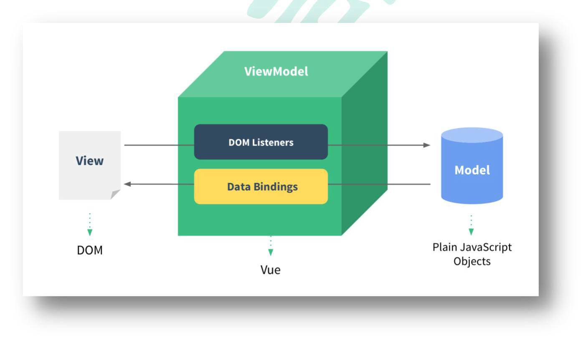觀察發現：
- data中所有的屬性，最後都出現在vm身上
- vm身上的所有屬性及Vue原型上所有屬性，在Vue模板中都可以直接使用
1.6 数据代理
可直接看小結
了解数据代理需要js的一些知识：Object.defineProperty()，属性标志，属性描述符，getter，setter。。。
建议学习文章地址：
https://zh.javascript.info/property-descriptors
https://zh.javascript.info/property-accessors
这里简单介绍一下：
属性标志:
对象属性（properties），除 value 外，还有三个特殊的特性（attributes），也就是所谓的“标志”
writable— 如果为true，则值可以被修改，否则它是只可读的enumerable— 如果为true，则表示是可以遍历的，可以在for.. .in Object.keys()中遍历出来configurable— 如果为true，则此属性可以被删除，这些特性也可以被修改，否则不可以
Object.getOwnPropertyDescriptor(obj, propertyName)
这个方法是查询有关属性的完整信息 obj是对象， propertyName是属性名
1 | let user = { |
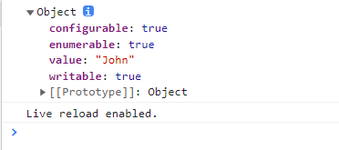打印结果
Object.defineProperty(obj, prop, descriptor)
obj：要定义属性的对象。
prop：要定义或修改的属性的名称
descriptor：要定义或修改的属性描述符
1 | let user = { |
其他的属性标志就不演示了，接下来看重点：访问器属性。
访问器属性：
本质上是用于获取和设置值的函数，但从外部代码来看就像常规属性。
访问器属性由 “getter” 和 “setter” 方法表示。在对象字面量中，它们用 get 和 set 表示：
1 | let obj = { |
更复杂一点的使用
1 | let user = { |
从外表看，访问器属性看起来就像一个普通属性。这就是访问器属性的设计思想。我们不以函数的方式 调用 user.fullName，我们正常 读取 它：getter 在幕后运行。
vue的计算属性的底层构造感觉用到了这种思想，我目前还没看过源码，是这样猜想的。
截至目前，fullName 只有一个 getter。如果我们尝试赋值操作 user.fullName=，将会出现错误：
1 | user.fullName = "Test"; // Error（属性只有一个 getter） |
为 user.fullName 添加一个 setter 来修复它：
1 | let user = { |
终于可以介绍数据代理了：
数据代理：通过一个对象代理对另一个对象中属性的操作（读/写）
先来看个案例：
1 | let obj = { |
这时候提一个需求：我们想要访问 obj 中的 x 的值，但我们最好不要直接去访问 obj ,而是想要通过 obj2 这个代理对象去访问。
这时候就可以用上 **Object.defineProperty()**，给 obj2 添加上访问器属性（也就是getter和setter）
代码
1 | let obj = { |
这就是数据代理，也不难吧
接下来介绍Vue中的数据代理
- Vue中的数据代理：通过vm对象来代理data对象中属性的操作（读/写）
- Vue中数据代理的好处：更加方便的操作data中的数据
- 基本原理：
- 通过Object.defineProperty()把data对象中所有属性添加到vm上。
- 为每一个添加到vm上的属性，都指定一个getter/setter。
- 在getter/setter内部去操作（读/写）data中对应的属性。
我来用一个案例来详细解释这一个过程。
1 | <!-- 准备好一个容器--> |
我们在控制台打印 new 出来的 vm

可以看到，写在配置项中的 data 数据被 绑定到了 vm 对象上，我先来讲结果，是 Vue 将 _data 中的 name，address 数据 代理到 vm 本身上。
一脸懵逼？
先来解释下_data 是啥， _data 就是 vm 身上的 _data 属性，就是下图那个
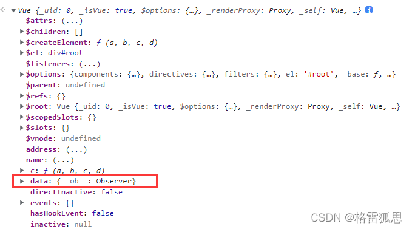这个 _data 是从哪来的？
1 | <script> |
new Vue 时， Vue 通过一系列处理， 将匹配项上的 data 数据绑定到了 _data 这个属性上，并对这个属性进行了处理（数据劫持），但这个属性就是来源于配置项中的 data，我们可以来验证一下。
1 | <script> |
打印结果为true，说明两者就是同一个
好了，再回到数据代理上来，将 vm._data 中的值，再代理到 vm 本身上来，用vm.name 代替 vm._data.name。这就是 Vue 的数据代理
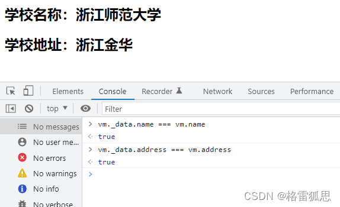这一切都是通过 Object.defineProperty() 来完成的，我来模拟一下这个过程
1 | Object.defineProperty(vm, 'name', { |
这样有啥意义？明明通过 vm._data.name 也可以访问 name 的值，为啥费力去这样操作？
在插值语法中， 取到的值就相当于 ，不用数据代理的话，在插值语法就要这样去写了。
这不符合直觉，怪怪的。vue 这样设计更利于开发者开发
:bulb:小結：
- Vue中的數據代理：
- 通過vm對象來代理data對象中屬性的操作(讀/寫)
- Vue中數據代理的好處：
- 更加方便的操作data中的數據
- 基本原理：
- 通過Object.defineProperty() 把data對象中所有的屬性添加到vm上。為每一個添加到vm上的屬性，都指定一個getter/setter。在getter/setter內部去操作(讀/寫)data中對應的屬性。
1.7 事件处理
事件的基本使用：
- 使用v-on:xxx 或 @xxx 绑定事件，其中xxx是事件名
- 事件的回调需要配置在methods对象中，最终会在vm上
- methods中配置的函數，不要用箭頭函數! 否則this就不是vm了
- methods中配置的函数，都是被Vue所管理的函数，this的指向是vm 或 组件实例对象
- @click=”demo” 和 @click=”demo($event)” 效果一致，但後者可以傳參
1 | <!-- 准备好一个容器--> |
Vue中的事件修饰符
- prevent：阻止默认事件（常用）
- stop：阻止事件冒泡（常用）
- once：事件只触发一次（常用）
1 | <!-- 准备好一个容器--> |
1.8 键盘事件
键盘事件语法糖：@keydown，@keyup
Vue中常用的按键别名：
回车 => enter
删除 => delete
退出 => esc
空格 => space
换行 => tab (特殊，必须配合keydown去使用)
上 => up
下 => down
左 => left
右 => right
系統修飾鍵 (用法特殊) ： ctrl、alt、shift、meta
- 配合keyup使用：按下修飾鍵的同時，在按下其他鍵，隨後釋放其他鍵，事件才會被觸發。
- 配合keydown使用：正常觸發事件。
1 | <!-- 准备好一个容器--> |
1.9 计算属性
- 定义：要用的属性不存在，要通过已有属性计算得来
- 原理：底层借助了Objcet.defineProperty方法提供的getter和setter
- get函数什么时候执行？
- (1).初次读取时会执行一次
- (2).当依赖的数据发生改变时会被再次调用
- 优势：与methods实现相比，内部有缓存机制（复用），效率更高，调试方便
- 备注：
- 计算属性最终会出现在vm上，直接读取使用即可
- 如果计算属性要被修改，那必须写set函数去响应修改，且set中要引起计算时依赖的数据发生改变
计算属性完整版写法
1 | <!-- 准备好一个容器--> |
计算属性简写 –> (當fullName的對象中只有寫getter函數時，可以使用簡寫)
1 | <!-- 准备好一个容器--> |
1.10 监视属性
1.10.1 监视属性watch：
- 当被监视的属性变化时, 回调函数自动调用, 进行相关操作
- 监视的属性必须存在，才能进行监视
- 监视的两种写法：
- (1).new Vue时传入watch配置
- (2).通过vm.$watch监视
第一种写法
1 | <!-- 准备好一个容器--> |
第二种写法
1 | <!-- 准备好一个容器--> |
1.10.2 深度监视：
- (1).Vue中的watch默认不监测对象内部值的改变（一层）
- (2).配置deep:true可以监测对象内部值改变（多层）
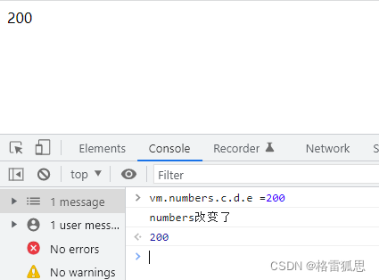备注：
(1).Vue自身可以监测对象内部值的改变，但Vue提供的watch默认不可以 (可配置deep:true手動開啟深度監視)
(2).使用watch时根据数据的具体结构，决定是否采用深度监视
1 | <!-- 准备好一个容器--> |
监视属性简写 –> (當監視的配置項只有handler時才可使用簡寫)
1 | <!-- 准备好一个容器--> |
vm.$watch簡寫
1 | <script> |
1.10.3 computed和watch之间的区别：
- computed能完成的功能，watch都可以完成
- watch能完成的功能，computed不一定能完成，例如：watch可以进行异步操作
:bulb:两个重要的小原则：
1.所被***Vue管理的函数，最好写成普通函数***，这样this的指向才是vm 或 组件实例对象
2.所有***不被Vue所管理的函数（定时器的回调函数、ajax的回调函数等、Promise的回调函数），最好写成箭头函数***，这样this的指向才是vm 或 组件实例对象
1 | <!-- 准备好一个容器--> |
1.11 绑定样式
1.11.1 class样式
写法：:class=”xxx” xxx可以是字符串、对象、数。
所以分为三种写法，字符串写法，数组写法，对象写法
1. 字符串写法
字符串写法适用于：类名不确定，要动态获取。
1 | <style> |
2. 数组写法
数组写法适用于：要绑定多个样式，个数不确定，名字也不确定。
1 | <style> |
3. 对象写法
对象写法适用于：要绑定多个样式，个数确定，名字也确定，但不确定用不用。
1 | <style> |
1.11.2 style样式
有两种写法，对象写法，数组写法
1. 对象写法
1 | <!-- 准备好一个容器--> |
2. 数组写法
1 | <!-- 准备好一个容器--> |
:bulb:綁定樣式小結
- class樣式
- 寫法：class=”xxx”，xxx可以是字符串、對象、數組
- 字符串寫法適用於：類名不確定，要動態獲取
- 對象寫法適用於：要綁定多個樣式，個數不確定，名子也不確定
- 數組寫法適用於：要綁定多個樣式，個數確定，名子也確定，但不確定用不用
- style樣式
- :style = “{fontSize：xxx}” ，其中xxx是動態值
- :style = “[a,b]”，其中a、b是樣式對象
1.12 条件渲染
1.12.1 v-if
写法：
(1).v-if=”表达式”
(2).v-else-if=”表达式”
(3).v-else=”表达式”
适用于：切换频率较低的场景
特点：不展示的DOM元素直接被移除
注意：v-if可以和:v-else-if、v-else一起使用，但要求结构不能被“打断” (亦即要連在一起)
1 | <!-- 准备好一个容器--> |
1.12.2 v-show
- 写法：v-show=”表达式”
- 适用于：切换频率较高的场景
- 特点：不展示的DOM元素未被移除，仅仅是使用样式隐藏掉(display:none)
备注：使用v-if的时，元素可能无法获取到，而使用v-show一定可以获取到
v-if 是实打实地改变dom元素，v-show 是隐藏或显示dom元素
1 | <!-- 准备好一个容器--> |
1.13 列表渲染
1.13.1 基本列表 (v-for指令)
- 用于展示列表数据
- 语法：v-for=”(item, index) in xxx” :key=”yyy”
key值必須唯一
- 可遍历：数组、对象、字符串（用的很少）、指定次数（用的很少）
1 | <div id="root"> |
1.13.2 key的原理
vue中的key有什么作用？（key的内部原理）
了解vue中key的原理需要一些前置知识。
就是vue的虚拟dom，vue会根据 data中的数据生成虚拟dom，如果是第一次生成页面，就将虚拟dom转成真实dom，在页面展示出来。
虚拟dom有啥用？每次vm._data 中的数据更改，都会触发生成新的虚拟dom，新的虚拟dom会跟旧的虚拟dom进行比较，如果有相同的，在生成真实dom时，这部分相同的就不需要重新生成，只需要将两者之间不同的dom转换成真实dom，再与原来的真实dom进行拼接。我的理解是虚拟dom就是起到了一个dom复用的作用，还有避免重复多余的操作，下文有详细解释。
而key有啥用？
key是虚拟dom的标识。
先来点预备的知识：啥是真实 DOM？真实 DOM 和 虚拟 DOM 有啥区别？如何用代码展现真实 DOM 和 虚拟 DOM
1. 真实DOM和其解析流程
这里参考超级英雄大佬：https://juejin.cn/post/6844903895467032589
webkit 渲染引擎工作流程图
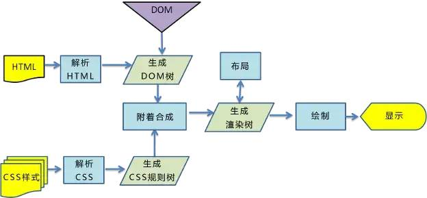中文版
所有的浏览器渲染引擎工作流程大致分为5步：创建 DOM 树 —> 创建 Style Rules -> 构建 Render 树 —> 布局 Layout -—> 绘制 Painting。
第一步，构建 DOM 树：当浏览器接收到来自服务器响应的HTML文档后，会遍历文档节点，生成DOM树。需要注意的是在DOM树生成的过程中有可能会被CSS和JS的加载执行阻塞，渲染阻塞下面会讲到。
第二步，生成样式表：用 CSS 分析器，分析 CSS 文件和元素上的 inline 样式，生成页面的样式表；
渲染阻塞：当浏览器遇到一个script标签时，DOM构建将暂停，直到脚本加载执行，然后继续构建DOM树。每次去执行Javascript脚本都会严重阻塞DOM树构建，如果JavaScript脚本还操作了CSSOM，而正好这个CSSOM没有下载和构建，那么浏览器甚至会延迟脚本执行和构建DOM，直到这个CSSOM的下载和构建。所以，script标签引入很重要，实际使用时可以遵循下面两个原则：
css优先：引入顺序上，css资源先于js资源
js后置：js代码放在底部，且js应尽量少影响DOM构建
还有一个小知识：当解析html时，会把新来的元素插入dom树里，同时去查找css，然后把对应的样式规则应用到元素上，查找样式表是按照从右到左的顺序匹配的例如：div p {…}，会先寻找所有p标签并判断它的父标签是否为div之后才决定要不要采用这个样式渲染。所以平时写css尽量用class或者id，不要过度层叠
第三步，构建渲染树：通过DOM树和CSS规则我们可以构建渲染树。浏览器会从DOM树根节点开始遍历每个可见节点(注意是可见节点)对每个可见节点，找到其适配的CSS规则并应用。渲染树构建完后，每个节点都是可见节点并且都含有其内容和对应的规则的样式。这也是渲染树和DOM树最大的区别所在。渲染是用于显示，那些不可见的元素就不会在这棵树出现了。除此以外，display none的元素也不会被显示在这棵树里。visibility hidden的元素会出现在这棵树里。
第四步，渲染布局：布局阶段会从渲染树的根节点开始遍历，然后确定每个节点对象在页面上的确切大小与位置，布局阶段的输出是一个盒子模型，它会精确地捕获每个元素在屏幕内的确切位置与大小。
第五步，渲染树绘制：在绘制阶段，遍历渲染树，调用渲染器的paint()方法在屏幕上显示其内容。渲染树的绘制工作是由浏览器的UI后端组件完成的。
注意点：
1、DOM 树的构建是文档加载完成开始的？ 构建 DOM 树是一个渐进过程，为达到更好的用户体验，渲染引擎会尽快将内容显示在屏幕上，它不必等到整个 HTML 文档解析完成之后才开始构建 render 树和布局。
2、Render 树是 DOM 树和 CSS 样式表构建完毕后才开始构建的？ 这三个过程在实际进行的时候并不是完全独立的，而是会有交叉，会一边加载，一边解析，以及一边渲染。
3、CSS 的解析注意点？ CSS 的解析是从右往左逆向解析的，嵌套标签越多，解析越慢。
4、JS 操作真实 DOM 的代价？传统DOM结构操作方式对性能的影响很大，原因是频繁操作DOM结构操作会引起页面的重排(reflow)和重绘(repaint)，浏览器不得不频繁地计算布局，重新排列和绘制页面元素，导致浏览器产生巨大的性能开销。直接操作真实DOM的性能特别差，我们可以来演示一遍。
1 | <div id="app"></div> |
从结果中可以看出，操作真实 DOM 的性能是非常差的，所以我们要尽可能的复用，减少 DOM 操作。
2. 虚拟 DOM 的好处
虚拟 DOM 就是为了解决浏览器性能问题而被设计出来的。如前，若一次操作中有 10 次更新 DOM 的动作，虚拟 DOM 不会立即操作 DOM，而是将这 10 次更新的 diff 内容保存到本地一个 JS 对象中，最终将这个 JS 对象一次性 attch 到 DOM 树上，再进行后续操作，避免大量无谓的计算量。所以，用 JS 对象模拟 DOM 节点的好处是，页面的更新可以先全部反映在 JS 对象(虚拟 DOM )上，操作内存中的 JS 对象的速度显然要更快，等更新完成后，再将最终的 JS 对象映射成真实的 DOM，交由浏览器去绘制。
虽然这一个虚拟 DOM 带来的一个优势，但并不是全部。虚拟 DOM 最大的优势在于抽象了原本的渲染过程，实现了跨平台的能力，而不仅仅局限于浏览器的 DOM，可以是安卓和 IOS 的原生组件，可以是近期很火热的小程序，也可以是各种GUI。
回到最开始的问题，虚拟 DOM 到底是什么，说简单点，就是一个普通的 JavaScript 对象，包含了 tag、props、children 三个属性。
接下来我们手动实现下 虚拟 DOM。
分两种实现方式：
一种原生 js DOM 操作实现；
另一种主流虚拟 DOM 库（snabbdom、virtual-dom）的实现（用h函数渲染）（暂时还不理解）
算法实现
（1）用 JS 对象模拟 DOM 树：
1 | <div id="virtual-dom"> |
我们用 JavaScript 对象来表示 DOM 节点，使用对象的属性记录节点的类型、属性、子节点等。
1 | /** |
构建虚拟的 DOM ，用 javascript 对象来表示
1 | let ul = el('div', { id: 'Virtual DOM' }, [ |
现在 ul 就是我们用 JavaScript 对象表示的 DOM 结构，我们输出查看 ul 对应的数据结构如下：
（2）将用 js 对象表示的虚拟 DOM 转换成真实 DOM：需要用到 js 原生操作 DOM 的方法。
1 | /** |
我们通过查看以上 render 方法，会根据 tagName 构建一个真正的 DOM 节点，然后设置这个节点的属性，最后递归地把自己的子节点也构建起来。
我们将构建好的 DOM 结构添加到页面 body 上面，如下：
1 | let ulRoot = ul.render(); |
这样，页面 body 里面就有真正的 DOM 结构，效果如下图所示：
我们知道虚拟 DOM 的好处和虚拟 DOM 的实现后就要讲讲 key 的作用了。
贴一下上面实现地完整代码
1 | <script> |
3. 虚拟DOM中key的作用
key是虚拟DOM对象的标识，当数据发生变化时，Vue会根据【新数据】生成【新的虚拟DOM】, 随后Vue进行【新虚拟DOM】与【旧虚拟DOM】的差异比较，比较规则如下：
- 旧虚拟DOM中找到了与新虚拟DOM相同的key：
- ①.若虚拟DOM中内容没变, 直接使用之前的真实DOM！
- ②.若虚拟DOM中内容变了, 则生成新的真实DOM，随后替换掉页面中之前的真实DOM。
- 旧虚拟DOM中未找到与新虚拟DOM相同的key
- 创建新的真实DOM，随后渲染到到页面。
好了，我们知道了最简单的key的原理，如果要继续研究下去就要涉及到vue的核心之一-Diff算法，后面会详细介绍。
4. 用index作为key可能会引发的问题：
若对数据进行：逆序添加、逆序删除等破坏顺序操作：
会产生没有必要的真实DOM更新 ==> 界面效果没问题, 但效率低。
案例
1 | <!-- 准备好一个容器--> |
解释：
初始数据
persons: [
{ id: ‘001’, name: ‘张三’, age: 18 },
{ id: ‘002’, name: ‘李四’, age: 19 },
{ id: ‘003’, name: ‘王五’, age: 20 }
]
vue根据数据生成虚拟 DOM
初始虚拟 DOM
1 | <li key='0'>张三-18<input type="text"></li> |
将虚拟 DOM 转为 真实 DOM
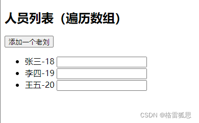this.persons.unshift({ id: '004', name: '老刘', age: 40 })
在 persons 数组最前面添加上 { id: ‘004’, name: ‘老刘’, age: 40 }
新数据：
persons: [
{ id: ‘004’, name: ‘老刘’, age: 40 },
{ id: ‘001’, name: ‘张三’, age: 18 },
{ id: ‘002’, name: ‘李四’, age: 19 },
{ id: ‘003’, name: ‘王五’, age: 20 }
]
vue根据数据生成虚拟 DOM
新虚拟 DOM
1 | <li key='0'>老刘-30<input type="text"></li> |
将虚拟 DOM 转为 真实 DOM
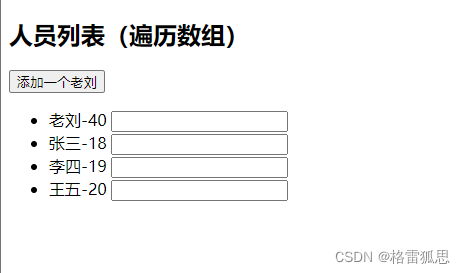因为老刘被插到第一个，重刷了 key 的值，vue Diff 算法 根据 key 的值 判断 虚拟DOM 全部发生了改变，然后全部重新生成新的 真实 DOM。实际上，张三，李四，王五并没有发生更改，是可以直接复用之前的真实 DOM，而因为 key 的错乱，导致要全部重新生成，造成了性能的浪费。
来张尚硅谷的图

如果结构中还包含输入类的DOM：
会产生错误DOM更新 ==> 界面有问题。
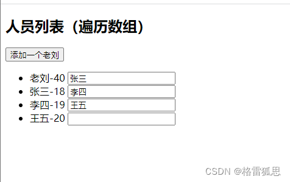这回造成的就不是性能浪费了，会直接导致页面的错误
5. 结论：
面試題：react、vue中的key有什麼作用? (key的內部原理)
- 虛擬DOM中key的作用
- key是虛擬DOM對象的標識，當數據發生變化時，Vue會根據【新數據】生成【新的虛擬DOM】，隨後Vue進行【新虛擬DOM】與【舊虛擬DOM】的差異比較，比較規則如後下
- 對比規則：
- 舊虛擬DOM中找到了與新虛擬DOM相同的key
- 若虛擬DOM中的內容沒變，直接使用之前的真實DOM
- 若虛擬DOM中的內容變了，則生成新的真實DOM，隨後替換掉頁面中之前的真實DOM
- 舊虛擬DOM未找到了與新虛擬DOM相同的key
- 創建新的真實DOM，隨後渲染到頁面
- 舊虛擬DOM中找到了與新虛擬DOM相同的key
- 用index作為key可能會引發的問題：
- 若對數據進行：逆序添加、逆序刪除等破壞順序操作
- 會產生沒有必要的真實DOM更新 ==> 介面效果沒問題，但效率低
- 如果結構中還包含輸入類的DOM
- 會產生錯誤DOM更新 ==> 介面有問題
- 若對數據進行：逆序添加、逆序刪除等破壞順序操作
- 開發中如何選擇key?
- 最好使用每条数据的唯一标识作为key, 比如id、手机号、身份证号、学号等唯一值
- 如果不存在对数据的逆序添加、逆序删除等破坏顺序操作，仅用于渲染列表用于展示，使用index作为key是没有问题的
来张尚硅谷的图，正经使用 key

1.13.3 列表過濾
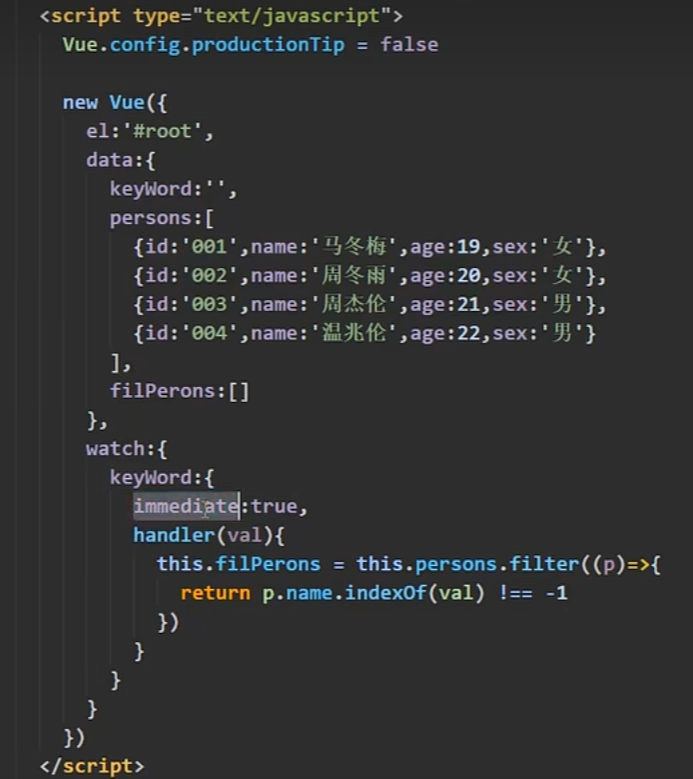使用watch實現
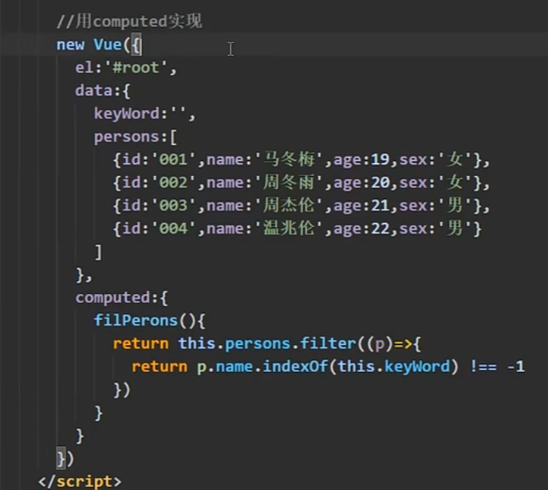使用computed實現
:bulb: 當computed跟watch都能實現功能時，優先使用computed
1.13.4 列表排序
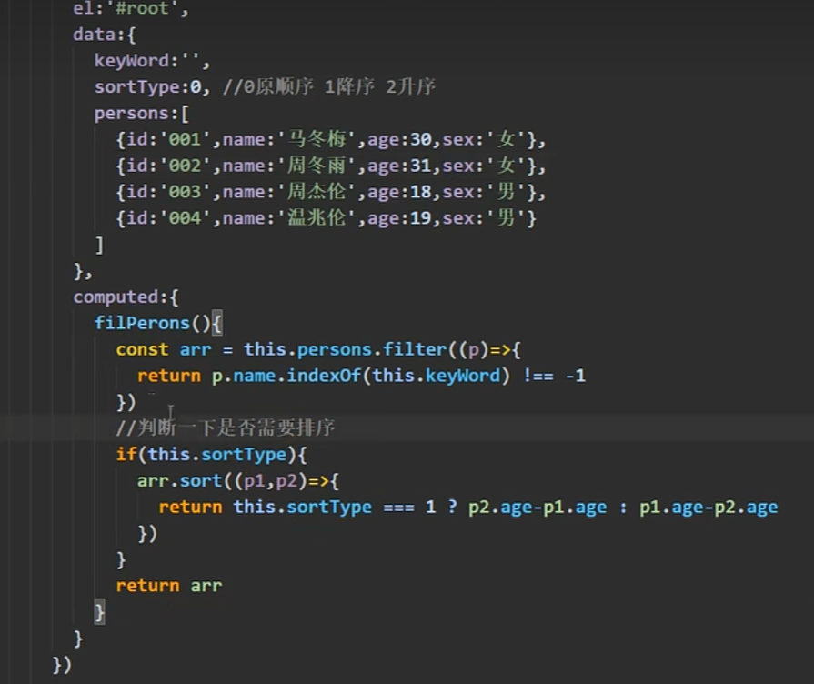代碼
1.14 vue 监测數據改變的原理解析
1.14.1 更新數據時的問題
先来个案例引入一下：
1 | <!-- 准备好一个容器--> |
点击更新马冬梅的信息，马冬梅的数据并没有发生改变。
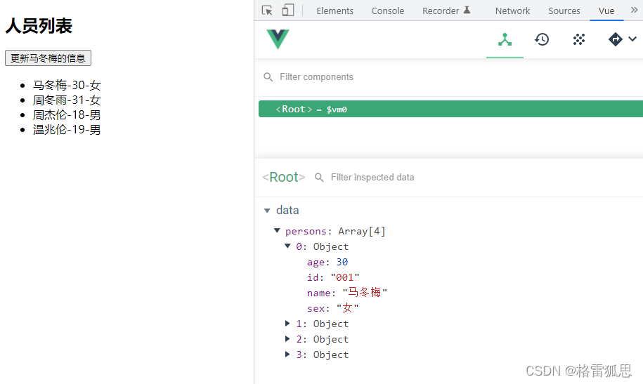我们来看看控制台：
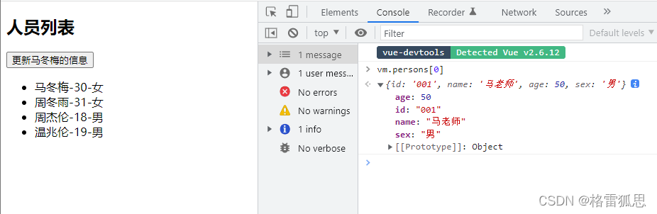
控制台上的数据发生了改变，说明，这个更改的数据并没有被 vue 监测到。
1.14.2 Vue監測數據改變的原理_對象
1. Vue 如何监测对象里的数据
代码
1 | <!-- 准备好一个容器--> |
讲一下解析模板后面的操作—》调用 set 方法时，就会去解析模板—–>生成新的虚拟 DOM—–>新旧DOM 对比 —–> 更新页面
2. 手動模拟 vue 中的数据监测
1 | <script type="text/javascript" > |
1.14.3 Vue.set 的使用
Vue.set(target，propertyName/index，value) 或
vm.$set(target，propertyName/index，value)
用法：
向响应式对象中添加一个 property，并确保这个新 property 同样是响应式的，且触发视图更新。它必须用于向响应式对象上添加新 property，因为 Vue 无法探测普通的新增 property (比如 vm.myObject.newProperty = 'hi')
代码
1 | <!-- 准备好一个容器--> |
Vue.set() 或 vm.$set 有缺陷：

Vue實例： vm
Vue實例的跟數據對象：data 和 _data
1.14.4 Vue監測數據改變的原理_數組
先写个代码案例
1 | <!-- 准备好一个容器--> |
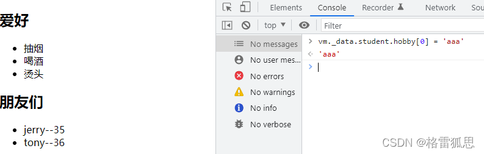所以我们通过 vm._data.student.hobby[0] = ‘aaa’ // 不奏效
vue 监测在数组那没有 getter 和 setter，所以监测不到数据的更改，也不会引起页面的更新
既然 vue 在对数组无法通过 getter 和 setter 进行数据监视，那 vue 到底如何监视数组数据的变化呢？
vue对数组的监测是通过 包装数组上常用的用于修改数组的方法来实现的。
vue官网的解释：

1.14.5 總結Vue數據監測：
Vue监视数据的原理：
vue会监视data中所有层次的数据
如何监测对象中的数据？
通过setter实现监视，且要在new Vue时就传入要监测的数据。
对象中后追加的属性，Vue默认不做响应式处理
如需给后添加的属性做响应式，请使用如下API：
Vue.set(target，propertyName/index，value) 或
vm.$set(target，propertyName/index，value)
如何监测数组中的数据？
通过包裹数组更新元素的方法实现，本质就是做了两件事：
- 调用原生对应的方法对数组进行更新
- 重新解析模板，进而更新页面
在Vue修改数组中的某个元素一定要用如下方法：
- 使用这些API:push()、pop()、shift()、unshift()、splice()、sort()、reverse()
- Vue.set() 或 vm.$set()
特别注意：Vue.set() 和 vm.$set() 不能给vm 或 vm的根数据对象 添加属性！！！
1.15 收集表单数据
若：，则v-model收集的是value值，用户输入的就是value值。
1 | <!-- 准备好一个容器--> |
若：，则v-model收集的是value值，且要给标签配置value值。
1 | <!-- 准备好一个容器--> |
若：
- 没有配置input的value属性，那么收集的就是checked（勾选 or 未勾选，是布尔值）
- 配置input的value属性:
- v-model的初始值是非数组，那么收集的就是checked（勾选 or 未勾选，是布尔值）
- v-model的初始值是数组，那么收集的的就是value组成的数组
1 | <!-- 准备好一个容器--> |
1.15.1 總結
收集表單數據總結：
若：，则v-model收集的是value值，用户输入的就是value值。
若：，则v-model收集的是value值，且要给标签配置value值。
若：
- 没有配置input的value属性，那么收集的就是checked（勾选 or 未勾选，是布尔值）
- 配置input的value属性:
- v-model的初始值是非数组，那么收集的就是checked（勾选 or 未勾选，是布尔值）
- v-model的初始值是数组，那么收集的的就是value组成的数组
备注：v-model的三个修饰符：
- lazy：失去焦点再收集数据
- number：输入字符串转为有效的数字
- trim：输入首尾空格过滤
1.16 过滤器（非重点）
定义：对要显示的数据进行特定格式化后再显示（适用于一些简单逻辑的处理）。
语法：
- 注册过滤器：
Vue.filter(name,callback)或new Vue{filters:{}} - 使用过滤器：
{{ xxx | 过滤器名}}或 v-bind:属性 = “xxx | 过滤器名”
1 | <!-- 准备好一个容器--> |
备注：
1.过滤器也可以接收额外参数、多个过滤器也可以串联
2.并没有改变原本的数据, 是产生新的对应的数据
1.17 内置指令
複習之前學過的指令：
- v-bind：單向綁定解析表達式，可簡寫為:xxx
- v-model：雙向數據綁定
- v-for：遍歷數組/對象/字符串
- v-on：綁定事件監聽，可簡寫為@
- v-if：條件渲染(動態控制節點是否存在)
- v-else：條件渲染(動態控制節點是否存在)
- v-show：條件渲染(動態控制節點是否展示)
1.17.1 v-text指令：(使用的比较少)
1.作用：向其所在的节点中渲染文本内容。
2.与插值语法的区别：v-text会替换掉节点中的内容，则不会。
1 | <!-- 准备好一个容器--> |
1.17.2 v-html指令：(使用的很少)
1.作用：向指定节点中渲染包含html结构的内容。
2.与插值语法的区别：
- v-html会替换掉节点中所有的内容，则不会。
- v-html可以识别html结构。
3.严重注意：v-html有安全性问题！
- 在网站上动态渲染任意HTML是非常危险的，容易导致XSS攻击。
- 一定要在可信的内容上使用v-html，永不要用在用户提交的内容上！
1 | <!-- 准备好一个容器--> |
1.17.3 v-cloak指令（没有值）：
- 本质是一个特殊属性，Vue实例创建完毕并接管容器后，会删掉v-cloak属性。
- 使用css配合v-cloak可以解决网速慢时页面展示出的问题。
1 | <style> |
1.17.4 v-once指令：(用的少)
- v-once所在节点在初次动态渲染后，就视为静态内容了。
- 以后数据的改变不会引起v-once所在结构的更新，可以用于优化性能。
1 | <!-- 准备好一个容器--> |
1.17.5 v-pre指令：(比较没用)
- 跳过其所在节点的编译过程
- 可利用它跳过：没有使用指令语法、没有使用插值语法的节点，会加快编译
1 | <!-- 准备好一个容器--> |
1.18 自定义指令
1.18.1 如何自定義指令
以下面兩個需求來演示如何自定義指令：
需求1：定义一个v-big指令，和v-text功能类似，但会把绑定的数值放大10倍。
需求2：定义一个v-fbind指令，和v-bind功能类似，但可以让其所绑定的input元素默认获取焦点。
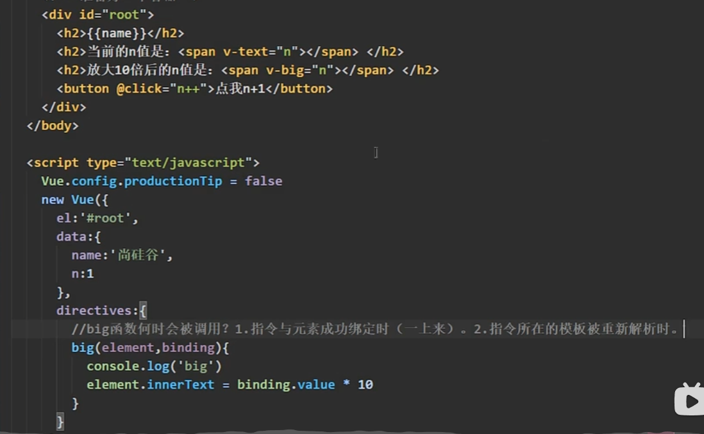需求1代碼
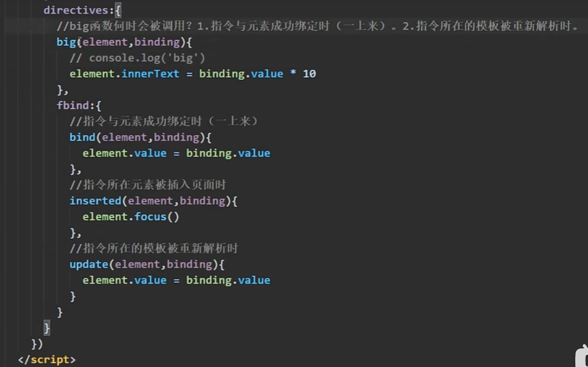需求2代碼
1.18.2 局部指令與全局指令
1. 局部指令
在當前Vue對象的 directives 中配置，僅可在當前的Vue對象中使用
1 | new Vue({ |
2. 全局指令
使用***Vue.directive()***配置指令，可在全部的Vue對象中使用
1 | <!-- 准备好一个容器--> |
1.18.3 自定義指令總結
- 定義語法：
- 局部指令：new Vue({ directives:{指令名:配置對象} }) 或 new Vue({ directives{指令名,回調函數} })
- 全局指令：Vue.directive(指令名,配置對象) 或 Vue.directive(指令名,回調函數)
- 配置對象中常用的3個回調：
- bind：指令与元素成功绑定时调用。
- inserted：指令所在元素被插入页面时调用。
- update：指令所在模板结构被重新解析时调用。
- 備註：
- 指令定義時不加v-，但使用時要加v-
- 指令名如果是多個單詞，要使用kebab-case命名方式 (ex：user-name)，不要使用camelCase命名 (ex：userName)
1.19 生命周期
1.19.1 生命周期流程
Vue 实例有⼀个完整的⽣命周期，也就是从new Vue()、初始化事件(.once事件)和生命周期、编译模版、挂载Dom -> 渲染、更新 -> 渲染、卸载 等⼀系列过程，称这是Vue的⽣命周期。

1.19.2 生命週期分析
- beforeCreate（创建前）：数据监测(getter和setter)和初始化事件还未开始，此时 data 的响应式追踪、event/watcher 都还没有被设置，也就是说不能访问到data、computed、watch、methods上的方法和数据。
- created（创建后）：实例创建完成，实例上配置的 options 包括 data、computed、watch、methods 等都配置完成，但是此时渲染得节点还未挂载到 DOM，所以不能访问到
$el属性。 - beforeMount（挂载前）：在挂载开始之前被调用，相关的render函数首次被调用。此阶段Vue开始解析模板，生成虚拟DOM存在内存中，还没有把虚拟DOM转换成真实DOM，插入页面中。所以网页不能显示解析好的内容。
- mounted（挂载后）：在el被新创建的 vm.$el（就是真实DOM的拷贝）替换，并挂载到实例上去之后调用（将内存中的虚拟DOM转为真实DOM，真实DOM插入页面）。此时页面中呈现的是经过Vue编译的DOM，这时在这个钩子函数中对DOM的操作可以有效，但要尽量避免。一般在这个阶段进行：开启定时器，发送网络请求，订阅消息，绑定自定义事件等等
- beforeUpdate（更新前）：响应式数据更新时调用，此时虽然响应式数据更新了，但是对应的真实 DOM 还没有被渲染（数据是新的，但页面是旧的，页面和数据没保持同步呢）。
- updated（更新后） ：在由于数据更改导致的虚拟DOM重新渲染和打补丁之后调用。此时 DOM 已经根据响应式数据的变化更新了。调用时，组件 DOM已经更新，所以可以执行依赖于DOM的操作。然而在大多数情况下，应该避免在此期间更改状态，因为这可能会导致更新无限循环。该钩子在服务器端渲染期间不被调用。
- beforeDestroy（销毁前）：实例销毁之前调用。这一步，实例仍然完全可用，
this仍能获取到实例。在这个阶段一般进行关闭定时器，取消订阅消息，解绑自定义事件。 - destroyed（销毁后）：实例销毁后调用，调用后，Vue 实例指示的所有东西都会解绑定，所有的事件监听器会被移除，所有的子实例也会被销毁。该钩子在服务端渲染期间不被调用。
- 解釋Template
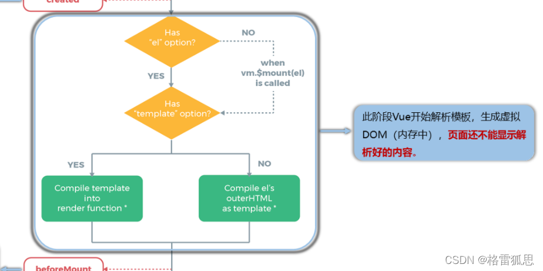来讲一下图中间大框框的内容
先判断有没有 el 这个配置项，没有就调用 vm.$mount(el)，如果两个都没有就一直卡着，显示的界面就是最原始的容器的界面。有 el 这个配置项，就进行判断有没有 template 这个配置项，没有 template 就将 el 绑定的容器编译为 vue 模板，来个对比图。
没编译前的：
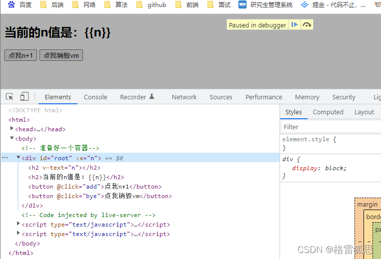编译后：
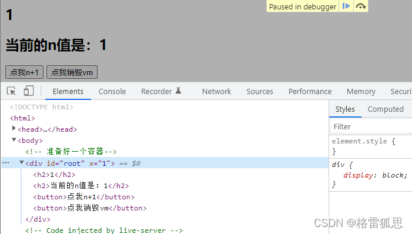这个 template 有啥用咧？
第一种情况，有 template：
如果 el 绑定的容器没有任何内容，就一个空壳子，但在 Vue 实例中写了 template，就会编译解析这个 template 里的内容，生成虚拟 DOM，最后将 虚拟 DOM 转为 真实 DOM 插入页面（其实就可以理解为 template 替代了 el 绑定的容器的内容）。


第二种情况，没有 template：
没有 template，就编译解析 el 绑定的容器，生成虚拟 DOM，后面就顺着生命周期执行下去。
1.19.3 總結生命週期
- 常用的生命週期函數：
- mounted：發送ajax請求、啟動定時器、綁定自定義事件、訂閱消息等【初始化工作】
- beforeDesrtroy：清除定時器、解綁自定義事件、取消訂閱消息等【收尾工作】
- 關於銷毀Vue實例
- 銷毀後借助Vue開發者工具看不到任何信息
- 銷毀後自定義事件會失效，但原生DOM事件依然有效 (ex: alert)
- 一般不會在beforeDestroy操作數據，因為即使操作數據，也不會在觸發數據更新流程了
1.20 非单文件组件
1.20.1 基本使用
Vue中使用组件的三大步骤：
- 定义组件(创建组件)
- 注册组件
- 使用组件(写组件标签)
1. 定义组件
使用Vue.extend(options)创建，其中options和new Vue(options)时传入的那个options几乎一样，但也有点区别；
区别如下：
el不要写，为什么？ ——— 最终所有的组件都要经过一个vm的管理，由vm决定服务哪个容器。
data必须写成函数，为什么？ ———— 避免组件被复用时，数据存在引用关系
- 亦即當數據改變時，其他引用此組件的地方，數據同時改變。
- 讲解一下面试小问题：data必须写成函数：
这是 js 底层设计的原因：举个例子
对象形式
2
3
4
5
6
7
8
9
10
11
a: 99,
b: 100
}
let x = data;
let y = data;
// x 和 y 引用的都是同一个对象，修改 x 的值， y 的值也会改变
x.a = 66;
console.loh(x); // a:66 b:100
console.log(y); // a:66 b:100函数形式
2
3
4
5
6
7
8
9
10
return {
a: 99,
b: 100
}
}
let x = data();
let y = data();
console.log(x === y); // false
// 我的理解是函数每调用一次就创建一个新的对象返回给他们
- 创建一个组件案例：使用Vue.extend() 创建
1 | <script type="text/javascript"> |
备注：使用template可以配置组件结构。
2. 注册组件
- 局部注册：靠new Vue的时候传入components选项
- 全局注册：靠Vue.component(‘组件名’,组件)
局部注册
1 | <script> |
全局注册
1 | <script> |
3. 写组件标签
1 | <!-- 准备好一个容器--> |
4. 小結
Vue中使用组件的三大步骤：
定义组件(创建组件)
注册组件
使用组件(写组件标签)
如何定義一個組件?
使用Vue.extend(options)创建，其中options和new Vue(options)时传入的那个options几乎一样，但也有点区别；
区别如下：
- el不要写，为什么？ ——— 最终所有的组件都要经过一个vm的管理，由vm决定服务哪个容器。
- data必须写成函数，为什么？ ———— 避免组件被复用时，数据存在引用关系
备注：使用template可以配置组件结构。
如何註冊組件?
- 局部注册：靠new Vue的时候传入components选项
- 全局注册：靠Vue.component(‘组件名’,组件)
編寫組件標籤：
1.20.2 使用組件的注意点：
关于组件名：
一个单词组成：
第一种写法(首字母小写)：school
第二种写法(首字母大写)：School
多个单词组成：
第一种写法(kebab-case命名)：my-school
第二种写法(CamelCase命名)：MySchool (需要Vue脚手架支持)
备注：
(1).组件名尽可能回避HTML中已有的元素名称，例如：h2、H2都不行。
(2).可以使用name配置项指定组件在开发者工具中呈现的名字。
关于组件标签:
- 第一种写法：
- 第二种写法：
备注：不用使用脚手架时，
会导致后续组件不能渲染。 - 第一种写法：
一个简写方式：
- const school = Vue.extend(options) 可简写为：const school = options
1.20.3 组件的嵌套
比较简单，直接展示代码：
1 | <!-- 准备好一个容器--> |
- 標準化開發層級關係如下圖
1.20.4 VueComponent
- school组件本质是一个名为VueComponent的構造函數，且不是程序员定义的，是Vue.extend生成的。
- 我们只需要写
或 ，Vue解析时会帮我们创建school组件的实例对象，即Vue帮我们执行的：new VueComponent(options)。 - 特别注意：每次调用Vue.extend，返回的都是一个全新的VueComponent！！！！
- 关于this指向：
- 组件配置中：data函数、methods中的函数、watch中的函数、computed中的函数 它们的this均是【VueComponent实例对象】。
- new Vue(options)配置中：data函数、methods中的函数、watch中的函数、computed中的函数 它们的this均是【Vue实例对象】。
- VueComponent的实例对象，以后简称vc（也可称之为：组件实例对象）。
- Vue的实例对象，以后简称vm。
- Vue 在哪管理 VueComponent
1.20.5 一个重要的内置关系
- 一个重要的内置关系：VueComponent.prototype.proto === Vue.prototype
:bulb:此處的VueComponent的原型對象的原型對象原本應該為Object的原型對象，Vue將其強制改為Vue的原型對象
- 为什么要有这个关系：让组件实例对象（vc）可以访问到 Vue原型上的属性、方法。
:bulb:實例對象的隱式原型屬性，永遠指向自己締造者的原型對象 –> 記憶：有點像java的繼承

1.21 单文件组件
单文件组件就是将一个组件的代码写在 .vue 这种格式的文件中，可使用下面方法.vue文件解析
- webpack：会将 .vue 文件解析成 html,css,js这些形式。
- vue提供的腳手架【推薦】
来做个单文件组件的案例：
下面的單文件組件要放到腳手架中才能使用
School.vue
1 | <!-- 組件的結構 --> |
Student.vue
1 | <template> |
App.vue
用来彙總所有的组件(大总管)
1 | <template> |
main.js
在这个文件里面创建 vue 实例
1 | import App from './App.vue' |
index.html
在这写 vue 要绑定的容器
1 |
|
2. vue脚手架，自定义事件，插槽等复杂内容
2.1 分析脚手架
2.1.1 說明
- Vue腳手架是Vue官方提供的標準化開發工具(開發平台)
- 最新的版本是4.x
- 文檔：https://cli.vuejs.org/zh/
- cli：command line interface
2.1.2 初始化脚手架
- 第一步(没有安装过的执行)：全局安装 @vue/cli
1 | npm install -g @vue/cli |
- 第二步：***切换到要创建项目的目录***，然后使用命令创建项目
1 | vue create xxxxx |
- 第三步：启动项目
1 | npm run serve |
2.1.3 脚手架文件结构
1 | ├── node_modules |
2.1.4 脚手架demo
components:
就直接把单文件组件的 School.vue 和 Student.vue 两个文件直接拿来用，不需要修改。
App.vue:
引入这两个组件，注册一下这两个组件，再使用。
1 | <template> |
main.js:
入口文件
1 | import Vue from 'vue' |
接下来就要详细讲解 main.js 中的 render 函数
2.1.5 render函数
插入一个小知识：
使用 import 导入第三方库的时候不需要 加 ‘./‘
导入我们自己写的：
1 | import App from './App.vue' |
导入第三方的
1 | import Vue from 'vue' |
不需要在 from ‘vue’ 加 './' 的原因是第三方库 node_modules 人家帮我们配置好了。
我们通过 import 导入第三方库，在第三方库的 package.json 文件中确定了我们引入的是哪个文件

通过 module 确定了我们要引入的文件。
回到 render 函数
之前的写法是这样：
1 | import App from './App.vue' |
如果这样子写，运行的话会引发如下的报错
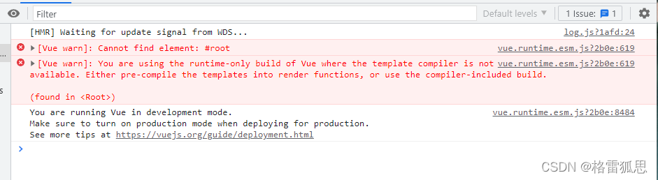报错的意思是，是在使用运行版本的 vue ，没有模板解析器。
从上面的小知识可以知道，我们引入的 vue 不是完整版的，是残缺的（为了减小vue的大小）。所以残缺的vue.js 只有通过 render 函数才能把项目给跑起来。
来解析一下render
1 | // render最原始写的方式 |
因为 render 函数内并没有用到 this，所以可以简写成箭头函数。
1 | new Vue({ |
再简写：
1 | new Vue({ |
最后把 createElement 换成 h 就完事了。
算啦算啦，把简写都整理一遍吧，js里的简写确实多哇。
对象内写方法最原始的：
1 | let obj = { |
ES6 简化版：
1 | let obj = { |
箭头函数简化版:
1 | let obj = { |
箭头函数再简化（最终版）：
1 | // 只有一个参数就可以把圆括号去了，函数体内部只有一个 return 就可以把大括号去掉，return去掉 |
这样就可以理解 render 函数的简写方式了。
来个不同版本 vue 的区别
- vue.js与vue.runtime.xxx.js的区别：
- vue.js是完整版的Vue，包含：核心功能+模板解析器。
- vue.runtime.xxx.js是运行版的Vue，只包含：核心功能；没有模板解析器。
- 因为vue.runtime.xxx.js没有模板解析器，所以不能使用template配置项，需要使用render函数接收到的createElement函数去指定具体内容。
2.1.6 修改脚手架的默认配置
- 使用vue inspect > output.js可以查看到Vue脚手架的默认配置。
- 使用vue.config.js可以对脚手架进行个性化定制，详情见：https://cli.vuejs.org/zh
2.1.7 脚手架中的index.html
1 |
|
2.2 vue 零碎的一些知识
2.2.1 ref属性
- 被用来给元素或子组件注册引用信息（id的替代者）
- 应用在html标签上获取的是真实DOM元素，应用在组件标签上是组件实例对象（vc）
- 使用方式：
- 打标识：
<h1 ref="xxx">.....</h1>或<School ref="xxx"></School> - 获取：
this.$refs.xxx
- 打标识：
具体案例
1 | <template> |
2.2.2 props配置项
功能：让组件接收外部传过来的数据
传递数据：
<Demo name="xxx"/>接收数据：
- 第一种方式（只接收）：
props:['name'] - 第二种方式（限制类型）：
props:{name:String} - 第三种方式（限制类型、限制必要性、指定默认值）：
1
2
3
4
5
6
7props:{
name:{
type:String, //类型
required:true, //必要性
default:'老王' //默认值 (寫了required:true就沒必要寫default)
}
}- 第一种方式（只接收）：
- 備註：props是只读的，Vue底层会监测你对props的修改，如果进行了修改，就会发出警告，若业务需求确实需要修改，那么请复制props的内容到data中一份，然后去修改data中的数据。
示例代码：
父组件给子组件传数据
App.vue
1 | <template> |
School.vue
1 | <template> |
2.2.3 mixin(混入)配置項
混入 (mixin) 提供了一种非常灵活的方式，来分发 Vue 组件中的可复用功能。
功能：可以把多個組件共用的配置提取成一個混入對象
使用方式：
- 第一步定義混合，例如
1
2
3
4
5{
data(){.....},
methods:{.....}
.....
}- 第二步使用混入，例如
- 全局混入：Vue.mixin(xxx)
- 局部混入：mixins:[‘xxx’]
例子：
1 | // 定义一个混入对象 |
选项合并
当组件和混入对象含有同名选项时，这些选项将以恰当的方式进行“合并”。
比如，数据对象在内部会进行递归合并，并在发生冲突时以组件数据优先。
1 | var mixin = { |
同名钩子函数将合并为一个数组，因此都将被调用。另外，混入对象的钩子将在组件自身钩子之前调用。
1 | var mixin = { |
值为对象的选项，例如 methods、components 和 directives，将被合并为同一个对象。两个对象键名冲突时，取组件对象的键值对。
1 | var mixin = { |
全局混入不建议使用
2.2.4 插件
功能：用於增強Vue
本質：包含install方法的一個對象，install的第一個參數是Vue，第二個以後的參數是插件使用者傳遞的數據。
定義插件：
1
2
3
4
5
6
7
8
9
10
11對象.install = function (Vue, options){
//1. 添加全局過濾器
Vue.filter(....)
//2. 添加全局指令
Vue.directive(....)
//3. 配置全局混入
Vue.mixin(....)
//4. 添加實例方法
Vue.prototype.$myMethod = function(){...}
Vue.prototype.$myProperty = xxxx
}使用插件：Vue.use()
具体案例：
plugin.js
1 | export default { |
main.js
通过全局方法 Vue.use() 使用插件。它需要在你调用 new Vue() 启动应用之前完成：
1 | // 引入插件 |
然后就可以在别的组件使用插件里的功能了。
2.2.5 scoped样式
- 作用：让样式在局部生效，防止冲突。
- 写法：
<style scoped>
具体案例：
1 | <style lang="less" scoped> <!-- lang：style的語言css/less；scoped：只作用在當前vue組件 --> |
2.2.6 总结TodoList案例
组件化编码流程：
- 拆分静态组件：组件要按照功能点拆分，命名不要与html元素冲突。
- 实现动态组件：考虑好数据的存放位置，数据是一个组件在用，还是一些组件在用：
- 一个组件在用：放在组件自身即可。
- 一些组件在用：放在他们共同的父组件上（状态提升）。
- 实现交互：从绑定事件开始。
props适用于：
- 父组件 ==> 子组件 通信
- 子组件 ==> 父组件 通信（要求父先给子一个函数）
使用v-model时要切记：v-model绑定的值不能是props传过来的值，因为props是不可以修改的！
若v-model綁定的是props傳過來的對象類型的值，修改對象中的屬性時Vue監測不到(不會報錯)，但不推薦，因為有點違反原則
2.3 浏览器本地存储
2.3.1 Cookie
Cookie是最早被提出来的本地存储方式，在此之前，服务端是无法判断网络中的两个请求是否是同一用户发起的，为解决这个问题，Cookie就出现了。Cookie 是存储在用户浏览器中的一段不超过 4 KB 的字符串。它由一个名称（Name）、一个值（Value）和其它几个用 于控制 Cookie 有效期、安全性、使用范围的可选属性组成。不同域名下的 Cookie 各自独立，每当客户端发起请求时，会自动把当前域名下所有未过期的 Cookie 一同发送到服务器。
Cookie的特性：
- Cookie一旦创建成功，名称就无法修改
- Cookie是无法跨域名的，也就是说a域名和b域名下的cookie是无法共享的，这也是由Cookie的隐私安全性决定的，这样就能够阻止非法获取其他网站的Cookie
- 每个域名下Cookie的数量不能超过20个，每个Cookie的大小不能超过4kb
- 有安全问题，如果Cookie被拦截了，那就可获得session的所有信息，即使加密也于事无补，无需知道cookie的意义，只要转发cookie就能达到目的
- Cookie在请求一个新的页面的时候都会被发送过去
Cookie 在身份认证中的作用
客户端第一次请求服务器的时候，服务器通过响应头的形式，向客户端发送一个身份认证的 Cookie，客户端会自动 将 Cookie 保存在浏览器中。
随后，当客户端浏览器每次请求服务器的时候，浏览器会自动将身份认证相关的 Cookie，通过请求头的形式发送给 服务器，服务器即可验明客户端的身份。
Cookie 不具有安全性
由于 Cookie 是存储在浏览器中的，而且浏览器也提供了读写 Cookie 的 API，因此 Cookie 很容易被伪造，不具有安全 性。因此不建议服务器将重要的隐私数据，通过 Cookie 的形式发送给浏览器。
注意：千万不要使用 Cookie 存储重要且隐私的数据！比如用户的身份信息、密码等。
2.3.2 Session
Session是另一种记录客户状态的机制，不同的是Cookie保存在客户端浏览器中，而Session保存在服务器上。客户端浏览器访问服务器的时候，服务器把客户端信息以某种形式记录在服务器上。这就是Session。客户端浏览器再次访问时只需要从该Session中查找该客户的状态就可以了session是一种特殊的cookie。cookie是保存在客户端的，而session是保存在服务端。
为什么要用session
由于cookie 是存在用户端，而且它本身存储的尺寸大小也有限，最关键是用户可以是可见的，并可以随意的修改，很不安全。那如何又要安全，又可以方便的全局读取信息呢？于是，这个时候，一种新的存储会话机制：session 诞生了
session原理
当客户端第一次请求服务器的时候，服务器生成一份session保存在服务端，将该数据(session)的id以cookie的形式传递给客户端；以后的每次请求，浏览器都会自动的携带cookie来访问服务器(session数据id)。
图示：

session我觉得可以简单理解为一个表，根据cookie传来的值查询表中的内容
session 标准工作流程
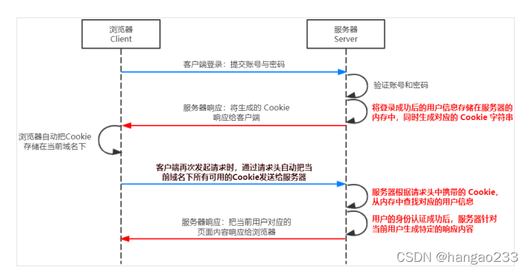我在 node.js 中详细演示了一遍 session 的使用，具体看了另一篇博客：https://blog.csdn.net/hangao233/article/details/123089029
2.3.3 LocalStorage
LocalStorage是HTML5新引入的特性，由于有的时候我们存储的信息较大，Cookie就不能满足我们的需求，这时候LocalStorage就派上用场了。
LocalStorage的优点：
- 在大小方面，LocalStorage的大小一般为5MB，可以储存更多的信息
- LocalStorage是持久储存，并不会随着页面的关闭而消失，除非主动清理，不然会永久存在
- 仅储存在本地，不像Cookie那样每次HTTP请求都会被携带
LocalStorage的缺点：
- 存在浏览器兼容问题，IE8以下版本的浏览器不支持
- 如果浏览器设置为隐私模式，那我们将无法读取到LocalStorage
- LocalStorage受到同源策略的限制，即端口、协议、主机地址有任何一个不相同，都不会访问
LocalStorage的常用API：
1 | // 保存数据到 localStorage |
LocalStorage的使用场景:
- 有些网站有换肤的功能，这时候就可以将换肤的信息存储在本地的LocalStorage中，当需要换肤的时候，直接操作LocalStorage即可
- 在网站中的用户浏览信息也会存储在LocalStorage中，还有网站的一些不常变动的个人信息等也可以存储在本地的LocalStorage中
2.3.4 SessionStorage
SessionStorage和LocalStorage都是在HTML5才提出来的存储方案，SessionStorage 主要用于临时保存同一窗口(或标签页)的数据，刷新页面时不会删除，关闭窗口或标签页之后将会删除这些数据。
SessionStorage与LocalStorage对比：
- SessionStorage和LocalStorage都在本地进行数据存储；
- SessionStorage也有同源策略的限制，但是SessionStorage有一条更加严格的限制，SessionStorage只有在同一浏览器的同一窗口下才能够共享；
- LocalStorage和SessionStorage都不能被爬虫爬取；
SessionStorage的常用API：
1 | // 保存数据到 sessionStorage |
SessionStorage的使用场景
由于SessionStorage具有时效性，所以可以用来存储一些网站的游客登录的信息，还有临时的浏览记录的信息。当关闭网站之后，这些信息也就随之消除了。
具体案例：
localStorage
1 |
|
sessionStorage
1 |
|
2.3.5 總結WebStorage
- 存儲內容大小一般支持5MB左右(不同瀏覽器可能不一樣)
- 瀏覽器端通過Window.session.Storage 和 Window.localStroage 屬性來實現本地存儲機制
- 相關API：
xxxxxStorage.setItem('key','value')：該方法接受一個鍵和值作為參數，會把鍵值對添加到存儲中，如果鍵名存在，則更新其對應的值xxxxxStorage.getItem('person')： 該方法接受一個鍵名作為參數，返回鍵名對應的值xxxxxStorage.removeItem('key')：該方法接受一個鍵名作為參數，並把該鍵名從存儲中刪除xxxxxStorage.clear()：該方法會清空存儲中的所有數據
- 備註：
- SessionStorage存儲的內容會隨著瀏覽器窗口關閉而消失
- LocalStorage存儲的內容，需要手動清除才會消失
xxxxxStorage.getItem('key')如果key對應的value獲取不到，則getItem的返回值是nullJSON.parse(null)的結果依然是null
2.4 组件自定义事件
2.4.1 綁定自定义事件
组件自定义事件是一种组件间通信的方式，适用于：子组件 ===> 父组件
使用场景
A是父组件，B是子组件，B想给A传数据，那么就要在A中给B绑定自定义事件（事件的回调在A中）。
绑定自定义事件：
1. 方式一：v-on
第一种方式，在父组件中：<Demo @atguigu="test"/>或 <Demo v-on:atguigu="test"/>
具体代码
App.vue
1 | <template> |
Student.vue
1 | <template> |
2. 方式二：ref
第二种方式，在父组件中：
使用 this.$refs.xxx.$on() 这样写起来更灵活，比如可以加定时器啥的。
具体代码
App.vue
1 | <template> |
Student.vue
1 | <template> |
若想让自定义事件只能触发一次，可以使用
once修饰符，或$once方法。触发自定义事件：
this.$emit('atguigu',数据)使用 this.$emit() 就可以子组件向父组件传数据
2.4.2 解绑自定义事件
解绑自定义事件this.$off('atguigu')
代码
1 | this.$off('atguigu') //解绑一个自定义事件 |
组件上也可以绑定原生DOM事件，需要使用native修饰符。
代码
1 | <!-- 通过父组件给子组件绑定一个自定义事件实现：子给父传递数据（第二种写法，使用ref） --> |
注意：在mounted()中通过
this.$refs.xxx.$on('atguigu',回调)绑定自定义事件时，回调要么配置在methods中，要么用箭头函数，否则this指向会出问题！
2.4.3 自定義事件總結
组件自定义事件是一种组件间通信的方式，适用于：子组件 ===> 父组件
使用场景：A是父组件，B是子组件，B想给A传数据，那么就要在A中给B绑定自定义事件（事件的回调在A中）。
绑定自定义事件：
第一种方式，在父组件中：
<Demo @atguigu="test"/>或<Demo v-on:atguigu="test"/>第二种方式，在父组件中：
1
2
3
4
5<Demo ref="demo"/>
.....
mounted() {
this.$refs.xxx.$on('atguigu',this.test) //绑定自定义事件
},若想让自定义事件只能触发一次，可以使用
once修饰符，或$once方法。
触发自定义事件：
this.$emit('atguigu',数据)解绑自定义事件
this.$off('atguigu')组件上也可以绑定原生DOM事件，需要使用
native修饰符。注意：在mounted()中通过
this.$refs.xxx.$on('atguigu',回调)绑定自定义事件时，回调要么配置在methods中，要么用箭头函数，否则this指向会出问题！
誰調用自定義事件誰就是this，此處的this是Student組件的實例對象vc；使用箭頭函數因為沒有this，會往外面找，所以this為vm；
而使用method配置時，因mehod定義在vm中，Vue官方承諾使用正常定義時，this會為當前的實例對象，此處為vm。
2.5 全局事件总线

一种组件间通信的方式，适用于任意组件间通信。
安装全局事件总线：
1
2
3
4
5
6
7new Vue({
......
beforeCreate() {
Vue.prototype.$bus = this //安装全局事件总线，$bus就是当前应用的vm
},
......
})使用事件总线：
接收数据：A组件想接收数据，则在A组件中给$bus绑定自定义事件，事件的回调留在A组件自身。
1
2
3
4
5
6
7
8
9//方式一：回调配置在methods中
methods(){
demo(data){......}
}
......
mounted() {
this.$bus.$on('xxxx',this.demo)
}
//方式二：使用箭頭函數配置回调
mounted() {
this.$bus.$on(‘xxxx’,(data)=>{
console.log(‘我是School组件，收到了数据’,data)
})
}1
提供数据：
this.$bus.$emit('xxxx',数据)最好在beforeDestroy钩子中，用$off去解绑当前组件所用到的事件。
示例代码
School.vue
1 | <template> |
Student.vue
1 | <template> |
2.6 消息订阅与发布
一种组件间通信的方式，适用于任意组件间通信。
使用步骤：
安装pubsub：
npm i pubsub-js引入:
import pubsub from 'pubsub-js'接收数据：A组件想接收数据，则在A组件中订阅消息，订阅的回调留在A组件自身。
1
2
3
4
5
6
7methods:{
demo(data){......}
}
......
mounted() {
this.pid = pubsub.subscribe('xxx',this.demo) //订阅消息
}提供数据：
pubsub.publish('xxx',数据)最好在beforeDestroy钩子中，用
PubSub.unsubscribe(pid)去取消订阅。
示例代码
订阅消息
School.vue
1 | <template> |
发布消息
Student.vue
1 | <template> |
全局事件總線和消息訂閱與發佈功能相同 => 建議使用全局事件總線，為Vue內部的技術
2.7 nextTick
- 语法：
this.$nextTick(回调函数) - 作用：在下一次 DOM 更新结束后执行其指定的回调。
- 什么时候用：当改变数据后，要基于更新后的新DOM进行某些操作时，要在nextTick所指定的回调函数中执行。
具体案例
1 | handleEdit(todo){ |
此處若不調用
this.$nextTick直接使用this.$refs.inputTitle.focus()，此焦點事件會失效，因為Vue底層是將handleEdit裡面的全部代碼先跑完才將視圖解析，此時input框尚未解析出來，因此.focus()無法作用
2.8 Vue封装的过度与动画
作用：在插入、更新或移除 DOM元素时，在合适的时候给元素添加样式类名。
图示：
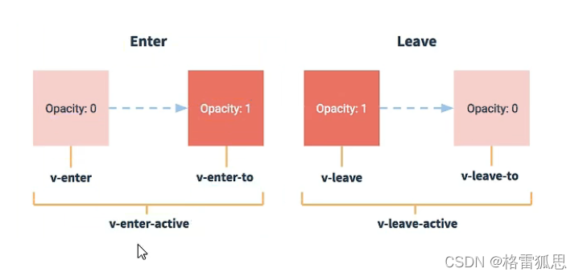写法：
准备好样式：
- 元素进入的样式：
- v-enter：进入的起点
- v-enter-active：进入过程中
- v-enter-to：进入的终点
- 元素离开的样式：
- v-leave：离开的起点
- v-leave-active：离开过程中
- v-leave-to：离开的终点
- 元素进入的样式：
使用
<transition>包裹要过渡的元素，并配置name属性：1
2
3<transition name="hello">
<h1 v-show="isShow">你好啊！</h1>
</transition>备注：若有多个元素需要过度，则需要使用：
<transition-group>，且每个元素都要指定key值。
具体案例（单个元素过渡）
1 | <template> |
name 的作用可以让让不同的元素有不同的动画效果
1 | <template> |
具体案例（多个元素过渡）
1 | <template> |
使用第三库的具体案例（随便看看，这个不重要）
库的名称：Animate.css
安装：npm i animate.css
引入：import ‘animate.css’
1 | <template> |
2.9 vue脚手架配置代理
Vue cli中的代理服務器配置可以用来解决跨域的问题
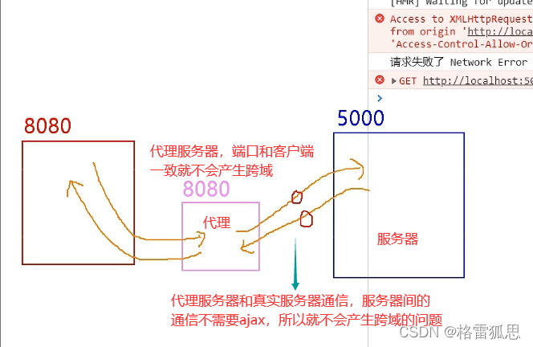
ajax 是前端技术，你得有浏览器，才有window对象，才有xhr，才能发ajax请求，使用代理服務器為服務器之間的通信，用传统的http请求就行了，所以沒有跨域問題。
方法一
在vue.config.js中添加如下配置：
1 | devServer:{ |
说明：
- 优点：配置简单，请求资源时直接发给前端（8080）即可。
- 缺点：不能配置多个代理，不能灵活的控制请求是否走代理。
- 工作方式：若按照上述配置代理，当请求了前端不存在的资源时，那么该请求会转发给服务器 （优先匹配前端资源）
方法二
编写vue.config.js配置具体代理规则：
1 | module.exports = { |
说明：
- 优点：可以配置多个代理，且可以灵活的控制请求是否走代理。
- 缺点：配置略微繁琐，请求资源时必须加前缀。
複習ES6
模板字符串知識：可參考模板字符串 - JavaScript | MDN (mozilla.org)模板字面量是用反引号（```）分隔的字面量，允许多行字符串、带嵌入表达式的字符串插值和一种叫带标签的模板的特殊结构。
模板字面量有时被非正式地叫作模板字符串，因为它们最常被用作字符串插值（通过替换占位符来创建字符串）。然而，带标签的模板字面量可能不会产生字符串——它可以与自定义标签函数一起使用，来对模板字面量的不同部分执行任何操作。
2
3
4
5
6
7
8
`string text line 1
string text line 2`
`string text ${expression} string text`
tagFunction`string text ${expression} string text`
2.10 slot插槽
作用：让父组件可以向子组件指定位置插入html结构，也是一种组件间通信的方式，适用于 父组件 ===> 子组件
分类：默认插槽、具名插槽、作用域插槽
使用方式：
默认插槽：
1
2
3
4
5
6
7
8
9
10
11父组件中：
<Category>
<div>html结构1</div>
</Category>
子组件中：
<template>
<div>
<!-- 定义插槽 -->
<slot>插槽默认内容...</slot>
</div>
</template>具名插槽：
1
2
3
4
5
6
7
8
9
10
11
12
13
14
15
16
17
18父组件中：
<Category>
<template slot="center">
<div>html结构1</div>
</template>
<template v-slot:footer>
<div>html结构2</div>
</template>
</Category>
子组件中：
<template>
<div>
<!-- 定义插槽 -->
<slot name="center">插槽默认内容...</slot>
<slot name="footer">插槽默认内容...</slot>
</div>
</template>作用域插槽：
理解：数据在组件的自身（子组件），但根据数据生成的结构需要组件的使用者（父组件）来决定。（games数据在Category（子）组件中，但使用数据所遍历出来的结构由App（父）组件决定）
具体编码：
1
2
3
4
5
6
7
8
9
10
11
12
13
14
15
16
17
18
19
20
21
22
23
24
25
26
27
28
29
30
31
32
33
34
35
36父组件中：
<Category>
<template scope="scopeData">
<!-- 生成的是ul列表 -->
<ul>
<li v-for="g in scopeData.games" :key="g">{{g}}</li>
</ul>
</template>
</Category>
<Category>
<template slot-scope="scopeData">
<!-- 生成的是h4标题 -->
<h4 v-for="g in scopeData.games" :key="g">{{g}}</h4>
</template>
</Category>
子组件中：
<template>
<div>
<!-- 通过数据绑定就可以把子组件的数据传到父组件 -->
<slot :games="games"></slot>
</div>
</template>
<script>
export default {
name:'Category',
props:['title'],
//数据在子组件自身
data() {
return {
games:['红色警戒','穿越火线','劲舞团','超级玛丽']
}
},
}
</script>
3. VUEX
3.1 概念
在Vue中实现集中式状态（数据）管理的一个Vue插件，对vue应用中多个组件的共享状态进行集中式的管理（读/写），也是一种组件间通信的方式，且适用于任意组件间通信。
如下圖，若使用全局事件總線來實現數據共享，很麻煩

使用Vuex插件來實現數據共享

3.2 何时使用？
多个组件需要共享数据时
3.3 Vuex工作原理图
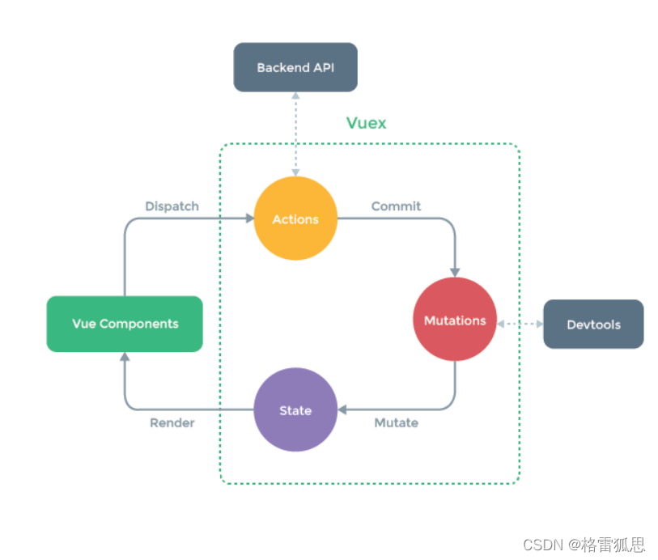3.4 搭建vuex环境
3.4.1 安裝Vuex
直接執行npm i vuex會安裝最新版本的Vuex，若要安裝Vuex的3版本，須執行npm i vuex@3
Vue2中，要用Vuex的3版本
Vue3中，要用Vuex的4版本
3.4.2 引入Vuex、配置store
创建文件：
src/store/index.js1
2
3
4
5
6
7
8
9
10
11
12
13
14
15
16
17
18
19
20
21
22
23
24
25
26
27
28
29
30
31
32//引入Vue核心库
import Vue from 'vue'
//引入Vuex
import Vuex from 'vuex'
//应用Vuex插件
Vue.use(Vuex)
//准备actions对象——响应组件中用户的动作
const actions = {}
//准备mutations对象——修改state中的数据
const mutations = {}
//准备state对象——保存具体的数据
const state = {}
/*
//創建store
const store = new Vuex.Store({
actions,
mutations,
state,
})
//暴露store
export default store
*/
//创建并暴露store (簡寫上方兩個代碼)
export default new Vuex.Store({
actions,
mutations,
state
})
Vue.use(Vuex)需在store創建實例對象之前使用，否則報錯
因Vue cli執行js的順序會先將全部的import先執行，才執行內部代碼，而import store時store的實例對象已經創建，所以在main.js中改變Vue.use(Vuex)和import store 的順序沒有用，須將Vue.use(Vuex)移到import store的js文件內部使用，使用前先引入vue
引入Vuex後，即可以在
main.js中创建vm时传入store配置项 (不引入時配置store配置項vue不會反應)1
2
3
4
5
6
7
8
9
10
11
12
13
14
15
16
17
18//引入vue
import Vue from 'vue'
//引入app
import app from './App.vue'
//引入store
import store from './store' //沒寫完整./store/index.js ，默認抓取index.js文件
//關閉Vue的生產提示
Vue.config.productionTip = false
//创建vm
new Vue({
el:'#app',
render: h => h(App),
store,
beforeCreate(){
Vue.prototype.$bus = this
}
})
3.5 基本使用
初始化数据、配置
actions、配置mutations，操作文件store.js1
2
3
4
5
6
7
8
9
10
11
12
13
14
15
16
17
18
19
20
21
22
23
24
25
26
27
28
29
30
31
32
33
34
35//引入Vue核心库
import Vue from 'vue'
//引入Vuex
import Vuex from 'vuex'
//引用Vuex
Vue.use(Vuex)
const actions = {
//响应组件中加的动作
jia(context,value){
// console.log('actions中的jia被调用了',miniStore,value)
context.commit('JIA',value)
},
}
const mutations = {
//执行加
JIA(state,value){
// console.log('mutations中的JIA被调用了',state,value)
state.sum += value
}
}
//初始化数据
const state = {
sum:0
}
//创建并暴露store
export default new Vuex.Store({
actions,
mutations,
state,
})一般情況，actions裡面的函數使用小寫，mutations裡面的函數使用大寫，以利區分
组件中读取vuex中的数据：
$store.state.sum组件中修改vuex中的数据：
$store.dispatch('action中的方法名',数据)或$store.commit('mutations中的方法名',数据)备注：若没有网络请求或其他业务逻辑，组件中也可以越过actions，即不写
dispatch，直接编写commit
具体案例：
index.js
1 | //该文件用于创建Vuex中最为核心的store |
Count.vue
1 | <template> |
3.6 getters的使用
概念：当state中的数据需要经过加工后再使用时，可以使用getters加工。
在
store.js中追加getters配置1
2
3
4
5
6
7
8
9
10
11
12
13
14
15......
const getters = {
bigSum(state){ //可由參數直接取得state內的值
return state.sum * 10
}
}
//创建并暴露store
export default new Vuex.Store({
actions,
mutations,
state,
getters
})
1 |
|
mapState方法：用于帮助我们映射
state中的数据为计算属性1
2
3
4
5
6
7computed: {
//借助mapState生成计算属性：sum、school、subject（对象写法）
...mapState({sum:'sum',school:'school',subject:'subject'}),
//借助mapState生成计算属性：sum、school、subject（数组写法）
...mapState(['sum','school','subject']),
},mapxxxxx的值必須使用字符串’yyy’，才能到xxxxx下找讀取的名稱；若不使用’yyy’，會變成一個變量，找不到
...mapState({sum:'sum',school:'school',subject:'subject'}),，ES6語法，就是將mapState({sum:’sum’,school:’school’,subject:’subject’})返回的對象以鍵值對展開，即如下所示：sum:function(){…},
school:function(){…}
subject:function(){…}
鍵值對sum:’sum’無法使用簡寫sum，只有當值為變量的時候才能使用簡寫形式
此處api提供數組寫法可以簡寫
mapGetters方法：用于帮助我们映射
getters中的数据为计算属性1
2
3
4
5
6
7computed: {
//借助mapGetters生成计算属性：bigSum（对象写法）
...mapGetters({bigSum:'bigSum'}),
//借助mapGetters生成计算属性：bigSum（数组写法）
...mapGetters(['bigSum'])
},
mapActions方法：用于帮助我们生成与
actions对话的方法，即：包含$store.dispatch(xxx)的函数1
2
3
4
5
6
7methods:{
//靠mapActions生成：incrementOdd、incrementWait（对象形式）
...mapActions({incrementOdd:'jiaOdd',incrementWait:'jiaWait'})
//靠mapActions生成：incrementOdd、incrementWait（数组形式）
...mapActions(['jiaOdd','jiaWait'])
}
mapMutations方法：用于帮助我们生成与
mutations对话的方法，即：包含$store.commit(xxx)的函数1
2
3
4
5
6
7methods:{
//靠mapActions生成：increment、decrement（对象形式）
...mapMutations({increment:'JIA',decrement:'JIAN'}),
//靠mapMutations生成：JIA、JIAN（对象形式）
...mapMutations(['JIA','JIAN']), //用簡寫生成的方法名為JIA及JIAN，綁定單擊事件必須將方法名修改為JIA及JIAN
}
备注：mapActions与mapMutations使用时，若需要传递参数需要：在模板中绑定事件时传递好参数，否则传的参数是事件对象(event)。
說明：mapMutations幫我們生成的方法為
increment(value){this.$store.commit('JIA',value)}，而原本手動寫的方法傳到mutation的值為this.n，我們要把n值傳遞到方法要在綁定點擊事件中傳參，若不傳參默認為event，即當前點擊事件
具体案例：
1 | <template> |
3.8 模块化+命名空间
目的：让代码更好维护，让多种数据分类更加明确。
修改
store.js1
2
3
4
5
6
7
8
9
10
11
12
13
14
15
16
17
18
19
20
21
22
23
24
25const countAbout = {
namespaced:true,//开启命名空间
state:{x:1},
mutations: { ... },
actions: { ... },
getters: {
bigSum(state){
return state.sum * 10
}
}
}
const personAbout = {
namespaced:true,//开启命名空间
state:{ ... },
mutations: { ... },
actions: { ... }
}
const store = new Vuex.Store({
modules: {
countAbout,
personAbout
}
})开启命名空间后，组件中读取state数据：
1
2
3
4
5//方式一：自己直接读取
this.$store.state.personAbout.list
//方式二：借助mapState读取：
// 用 mapState 取 countAbout 中的state 必须加上 'countAbout'
...mapState('countAbout',['sum','school','subject']),开启命名空间后，组件中读取getters数据：
1
2
3
4//方式一：自己直接读取
this.$store.getters['personAbout/firstPersonName']
//方式二：借助mapGetters读取：
...mapGetters('countAbout',['bigSum'])开启命名空间后，组件中调用dispatch
1
2
3
4//方式一：自己直接dispatch
this.$store.dispatch('personAbout/addPersonWang',person)
//方式二：借助mapActions：
...mapActions('countAbout',{incrementOdd:'jiaOdd',incrementWait:'jiaWait'})开启命名空间后，组件中调用commit
1
2
3
4//方式一：自己直接commit
this.$store.commit('personAbout/ADD_PERSON',person)
//方式二：借助mapMutations：
...mapMutations('countAbout',{increment:'JIA',decrement:'JIAN'}),
具体案例：
count.js
1 | //求和相关的配置 |
person.js
1 | //人员管理相关的配置 |
index.js
1 | //该文件用于创建Vuex中最为核心的store |
count.vue
1 | <template> |
person.vue
1 | <template> |
4. vue-router
4.1 vue-router相關的理解
4.1.1 vue-router的理解
vue 的一个插件库，专门用来实现 SPA 应用
4.1.2 对 SPA 应用的理解
单页 Web 应用（single page web application，SPA）。
整个应用只有一个完整的页面。
点击页面中的导航链接不会刷新页面，只会做页面的局部更新。
数据需要通过 ajax 请求获取。
4.1.3 路由的理解
1. 什麼是路由
- 一个路由（route）就是一组映射关系（key - value），多个路由需要路由器（router）进行管理。
- key 为路径, value 可能是 function 或 component
2. 路由分类
- 后端路由：
- 理解：value 是 function, 用于处理客户端提交的请求。
- 工作过程：服务器接收到一个请求时, 根据请求路径找到匹配的函数
来处理请求, 返回响应数据。
- 前端路由：
- 理解：value 是 component，用于展示页面内容。
- 工作过程：当浏览器的路径改变时, 对应的组件就会显示。
編碼世界中的route

前端中的route

4.2 基本使用
安装vue-router，命令：
npm i vue-router应用插件：
Vue.use(VueRouter)编写router配置项(./router/index.js):
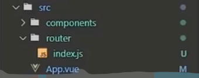
1 | //引入VueRouter |
实现切换（active-class可配置高亮样式）
1
<router-link active-class="active" to="/about">About</router-link>
指定展示位置
1
<router-view></router-view>
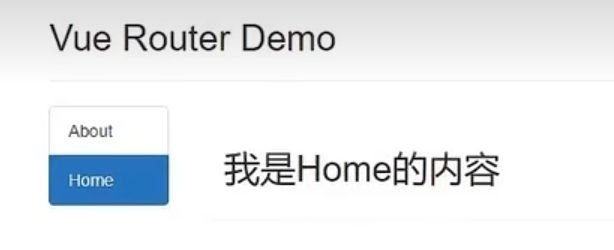效果
4.2 几个注意点
- 路由组件通常存放在
pages文件夹，一般组件通常存放在components文件夹。 - 通过切换，“隐藏”了的路由组件，默认是被销毁掉的，需要的时候再去挂载。
- 每个组件都有自己的
$route属性，里面存储着自己的路由信息。 - 整个应用只有一个router，可以通过组件的
$router属性获取到。
4.3 多级路由（嵌套路由）
配置路由规则，使用children配置项：
1
2
3
4
5
6
7
8
9
10
11
12
13
14
15
16
17
18
19
20routes:[
{
path:'/about',
component:About,
},
{
path:'/home',
component:Home,
children:[ //通过children配置子级路由
{
path:'news', //此处一定不要写：/news
component:News
},
{
path:'message',//此处一定不要写：/message
component:Message
}
]
}
]跳转（要写完整路径）：
1
<router-link to="/home/news">News</router-link>
指定展示位置
1
<router-view></router-view>
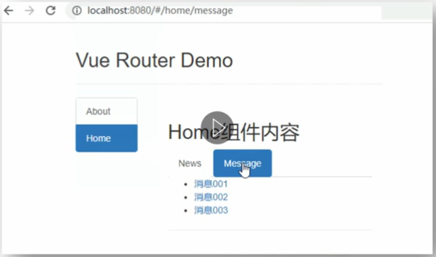效果
4.4 路由的query参数
传递参数
1
2
3
4
5
6
7
8
9
10
11
12
13<!-- 跳转并携带query参数，to的字符串写法，使用v-bind:to 綁定時，等號後面使用js解析，需使用模板字符串來告訴js是字符串，若要綁定數據可使用${xxx.xxx}-->
<router-link :to="`/home/message/detail?id=666&title=你好`">跳转</router-link>
<!-- 跳转并携带query参数，to的对象写法 -->
<router-link :to="{
path:'/home/message/detail',
query:{
id:666,
title:'你好'
}
}">
跳转
</router-link>接收参数：
1
2$route.query.id
$route.query.title
- 實例
./router/index.js
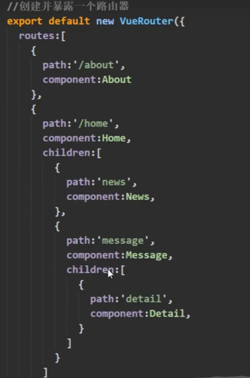details.vue
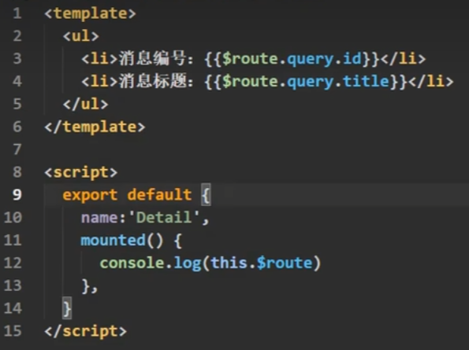message.vue
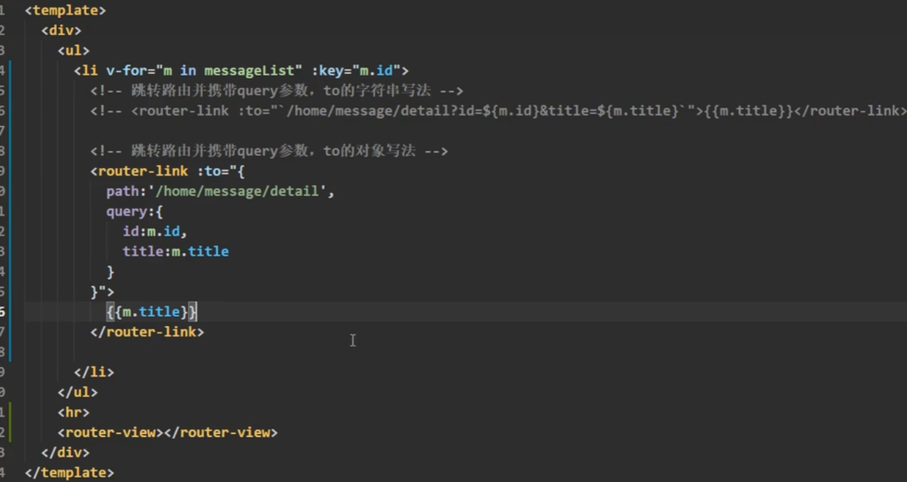App.vue
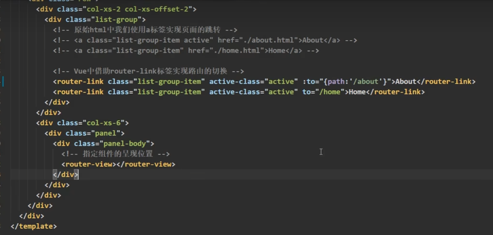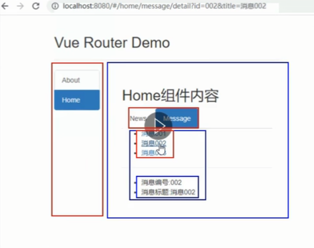效果
4.5 命名路由
作用：可以简化路由的跳转。
如何使用
给路由命名：
1
2
3
4
5
6
7
8
9
10
11
12
13
14
15
16
17{
path:'/demo',
component:Demo,
children:[
{
path:'test',
component:Test,
children:[
{
name:'hello' //给路由命名
path:'welcome',
component:Hello,
}
]
}
]
}简化跳转：
1
2
3
4
5
6
7
8
9
10
11
12
13
14
15
16<!--简化前，需要写完整的路径 -->
<router-link to="/demo/test/welcome">跳转</router-link>
<!--简化后，直接通过名字跳转 -->
<router-link :to="{name:'hello'}">跳转</router-link>
<!--简化写法配合传递参数 -->
<router-link
:to="{
name:'hello',
query:{
id:666,
title:'你好'
}
}"
>跳转</router-link>
4.6 路由的params参数
配置路由，声明接收params参数
1
2
3
4
5
6
7
8
9
10
11
12
13
14
15
16
17
18
19
20{
path:'/home',
component:Home,
children:[
{
path:'news',
component:News
},
{
component:Message,
children:[
{
name:'xiangqing',
path:'detail/:id/:title', //使用占位符声明接收params参数
component:Detail
}
]
}
]
}传递参数
1
2
3
4
5
6
7
8
9
10
11
12
13<!-- 跳转并携带params参数，to的字符串写法 -->
<router-link :to="/home/message/detail/666/你好">跳转</router-link>
<!-- 跳转并携带params参数，to的对象写法 -->
<router-link
:to="{
name:'xiangqing',
params:{
id:666,
title:'你好'
}
}"
>跳转</router-link>特别注意：路由携带params参数时，若使用to的对象写法，则不能使用path配置项，必须使用name配置！
接收参数：
1
2$route.params.id
$route.params.title
4.7 路由的props配置
作用：让路由组件更方便的收到参数
1 | { |
方便參數傳到組件裡面時，組件使用時不用寫得這麼複雜 (ex：this.$route.query.id) ，使的組件裡的參數更簡便
跳转去组件的具体代码
1 | <template> |
4.8 <router-link>的replace属性
- 作用：控制路由跳转时操作浏览器历史记录的模式
- 浏览器的历史记录有两种写入方式：分别为
push和replace，push是追加历史记录，replace是替换当前记录。路由跳转时候默认为push - 如何开启
replace模式：<router-link replace .......>News</router-link>
思路：通常使用在下面場景
- 在使用者進行註冊或登錄等操作後，跳轉到首頁時，可以使用replace屬性來替換路由，避免返回到註冊或登錄頁面。
- 當用戶訪問某個敏感頁面（如個人中心），需要登錄後才能訪問，當用戶點擊“登錄”按鈕時，可以使用replace屬性來替換當前路由，避免登錄成功後返回到敏感頁面之前訪問的頁面。
- 當用戶在訂單支付成功後跳轉到訂單詳情頁時，可以使用replace屬性來替換路由，避免刷新頁面時重新提交訂單支付請求。
4.9 编程式路由导航
作用：不借助
<router-link>实现路由跳转，让路由跳转更加灵活具体编码：
1
2
3
4
5
6
7
8
9
10
11
12
13
14
15
16
17
18
19//$router的两个API
this.$router.push({
name:'xiangqing',
params:{
id:xxx,
title:xxx
}
})
this.$router.replace({
name:'xiangqing',
params:{
id:xxx,
title:xxx
}
})
this.$router.forward() //前进
this.$router.back() //后退
this.$router.go(y) //可前进也可后退，依參數y判斷前進次數或後退次數
Message.vue


banner.vue


4.10 缓存路由组件
作用：让不展示的路由组件保持挂载，不被销毁。
具体编码：
在展示組件的地方使用
<keep-alive>，这个 include 指的是组件名，不寫include的話，全部在此展示區展示的組件都會保持掛載1
2
3<keep-alive include="News">
<router-view></router-view>
</keep-alive>
在[4.2](#4.2 几个注意点)中有提到，”通过切换，“隐藏”了的路由组件，默认是被销毁掉的，需要的时候再去挂载”，這個組件可以保持掛載，要實現多個指定組件保持掛載的話，要寫成
:include="['News','Message']"
Home.vue

4.11 两个新的生命周期钩子
作用：路由组件所独有的两个钩子，用于捕获路由组件的激活状态。
具体名字：
activated路由组件被激活时触发。deactivated路由组件失活时触发。
- 这两个生命周期钩子需要配合前面的缓存路由组件使用（没有缓存路由组件不起效果）
- 總共有三個生命週期鉤子沒有在Vue生命週期的圖裡
- [nextTick](#2.7 nextTick)：在下一次 DOM 更新结束后执行其指定的回调
- activated：路由组件被激活时触发。
- deactivated：路由组件失活时触发。
具體編碼：
功能：顯示此頁面時打開定時器控制透明度，切換頁面時將定時器停掉
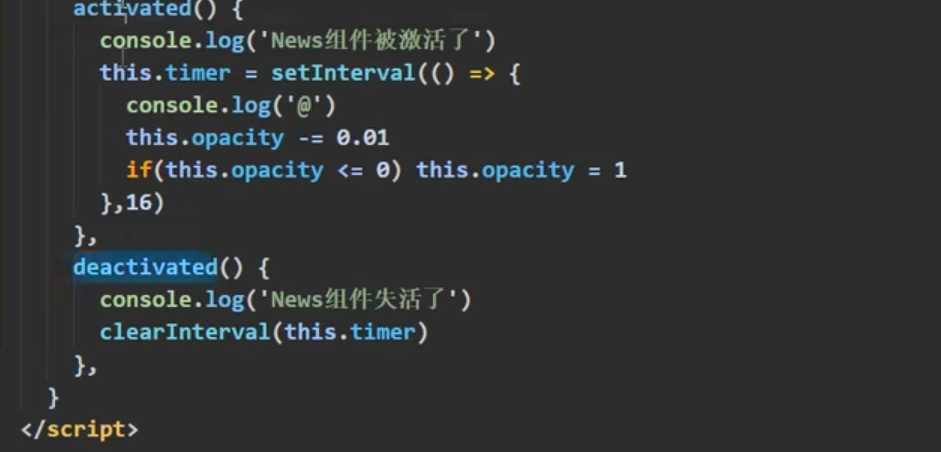4.12 路由守卫
作用：对路由进行权限控制
分类：全局守卫、独享守卫、组件内守卫
4.12.1 全局守卫:
./rooter/index.js
1 | //全局前置守卫：初始化时执行、每次路由切换前执行 |
完整代码
1 | // 这个文件专门用于创建整个应用的路由器 |
若用前置路由守衛實現改變瀏覽器頁面title，必須在兩個放行前面都寫更改的代碼，不然會有bug，當切換頁面被路由守衛擋住時，瀏覽器頁面title還是會更改，若使用後置路由守衛只需直接寫更改的代碼即可，無須判斷
思路：
- 記錄路由錯誤: 當路由切換失敗時，全局后置路由守衛可以用來記錄路由錯誤，並向服務器報告錯誤信息。
- 統計路由訪問量: 全局后置路由守衛還可以用來統計路由訪問量，當每次路由切換成功時，就可以通過統計訪問量的方式進行數據分析，從而了解用戶的使用情況。
- 異常信息處理: 在開發過程中，可能會出現一些意料之外的錯誤，這時候可以使用全局後置守衛來捕獲異常信息，提供更好的錯誤提示和處理方式。
4.12.2 独享守卫:
- 某一個路由所獨享的守衛，寫在要獨享的route組件內
獨享守衛沒有afterEnter()
./rooter/index.js
1 | beforeEnter(to,from,next){ |
4.12.3 组件内守卫：
- 調用時機與前置/後置全局守衛不同
- 必須由路由規則(點擊導覽條)才會調用 (ex:使用
標籤展示頁面內容不會調用) - 組件內守衛要寫在組件內部，不是路由器配置中
./pages/About.vue
1 | //进入守卫：通过路由规则，进入该组件时被调用 |
4.13 路由器的两种工作模式
对于一个url来说，什么是hash值？—— #及其后面的内容就是hash值。
hash值不会包含在 HTTP 请求中，即：hash值不会带给服务器。
hash模式：
- 地址中永远带着#号，不美观 。
- 若以后将地址通过第三方手机app分享，若app校验严格，则地址会被标记为不合法。
- 兼容性较好。
history模式【通常使用】：
- 地址干净，美观 。
- 兼容性和hash模式相比略差。
- 应用部署上线时需要后端人员支持，解决刷新页面服务端404的问题。

5. Vue UI 组件库
5.1 移动端常用 UI 组件库
Cube UI https://didi.github.io/cube-ui
Mint UI http://mint-ui.github.io
5.2 PC 端常用 UI 组件库
Element UI https://element.eleme.cn
IView UI https://www.iviewui.com
:triangular_flag_on_post: Vue3 快速上手
1. 简介
2020年9月18日，Vue.js发布3.0版本，代号：One Piece（海贼王）
Release v3.0.0 One Piece · vuejs/core (github.com)
1.1 性能的提升
- 打包大小减少41%
- 初次渲染快55%, 更新渲染快133%
- 内存减少54%
1.2 源码的升级
- 使用
Proxy代替defineProperty实现响应式 - 重写虚拟
DOM的实现和Tree-Shaking
1.3 拥抱TypeScript
- Vue3可以更好的支持
TypeScript
1.4 新的特性
- Composition API（组合API）
setup配置ref与reactivewatch与watchEffectprovide与inject
- 新的内置组件
FragmentTeleportSuspense
- 其他改变
- 新的生命周期钩子
data选项应始终被声明为一个函数- 移除
keyCode支持作为v-on的修饰符
2. 创建一个Vue项目
2.1 使用 vue-cli 创建
官方文档：https://cli.vuejs.org/zh/guide/creating-a-project.html#vue-create
1 | ## 查看@vue/cli版本，确保@vue/cli版本在4.5.0以上 |
2.2 使用 vite 创建 (了解)
官方文档：https://v3.cn.vuejs.org/guide/installation.html#vite
vite官网：https://vitejs.cn
- 什么是vite？—— 是Vue团队打造的新一代前端构建工具。
- 优势如下：
- 开发环境中，无需打包操作，可快速的冷启动。
- 轻量快速的热重载（HMR）。
- 真正的按需编译，不再等待整个应用编译完成。
- 传统构建 与 vite构建对比图
传统构建模式，是将所有资源都打包好，再上线

Vite是按需加载

接下来我们就用Vite来创建一个Vue3的项目
1 | ## 创建工程 |
2.3 分析工程結構
2.3.1 main.js
Vue2项目的main.js
1 | import Vue from 'vue' |
我们再来看看Vue3项目中的main.js
1 | import { createApp } from 'vue' |
分析一下
1 | // 引入的不再是Vue构造函数了，引入的是一个名为createApp的工厂函数 (構造函數 => 使用new創建；工廠函數 => 不須使用new創建，直接用) |
2.3.2 App.vue
我们再来看看组件
在template标签里可以没有根标签了
1 | <template> |
3. 常用 Composition API
官方文档: https://v3.cn.vuejs.org/guide/composition-api-introduction.html
3.1 拉开序幕的setup
- 理解：Vue3.0中一个新的配置项，值为一个函数。
- setup是所有Composition API（组合API）“ 表演的舞台 ”。
- 组件中所用到的：数据、方法等等，均要配置在setup中。
- setup函数的两种返回值：
- 若返回一个对象，则对象中的属性、方法, 在模板中均可以直接使用。（重点关注！）
- 若返回一个渲染函数：则可以自定义渲染内容。（了解）
- 注意点：
- 尽量不要与Vue2.x配置混用
- Vue2.x配置（data、methos、computed…）中可以访问到setup中的属性、方法。
- 但在setup中不能访问到Vue2.x配置（data、methos、computed…）。
- 如果有重名, setup优先。
- setup不能是一个async函数，因为返回值不再是return的对象, 而是promise, 模板看不到return对象中的属性。（后期也可以返回一个Promise实例，但需要Suspense和异步组件的配合）
- 尽量不要与Vue2.x配置混用
3.2 ref函数
- 作用: 定义一个响应式的数据
- 语法:
const xxx = ref(initValue)- 创建一个包含响应式数据的引用对象（reference对象，简称ref对象）。
- JS中操作数据：
xxx.value - 模板中读取数据: 不需要.value，直接：
<div>{{xxx}}</div>
- 备注：
- 接收的数据可以是：基本类型、也可以是对象类型。
- 基本类型的数据：响应式依然是靠
Object.defineProperty()的get与set完成的。 - 对象类型的数据：内部 “ 求助 ” 了Vue3.0中的一个新函数——
reactive函数。
3.3 reactive函数
- 作用: 定义一个对象类型的响应式数据（基本类型不要用它，要用
ref函数） - 语法：
const 代理对象= reactive(源对象)接收一个对象（或数组），返回一个代理对象（Proxy的实例对象，简称proxy对象） - reactive定义的响应式数据是“深层次的”。
- 内部基于 ES6 的 Proxy 实现，通过代理对象操作源对象内部数据进行操作。
3.4 Vue3.0中的响应式原理
3.4.1 vue2.x的响应式
实现原理：
对象类型：通过
Object.defineProperty()对属性的读取、修改进行拦截（数据劫持）。数组类型：通过重写更新数组的一系列方法来实现拦截。（对数组的变更方法进行了包裹）。
1
2
3
4Object.defineProperty(data, 'count', {
get () {},
set () {}
})
存在问题：
- 新增属性、删除属性, 界面不会更新。
- 直接通过下标修改数组, 界面不会自动更新。
3.4.2 Vue3.0的响应式
实现原理:
通过Proxy（代理）: 拦截对象中任意属性的变化, 包括：属性值的读写、属性的添加、属性的删除等。
通过Reflect（反射）: 对源对象的属性进行操作。
MDN文档中描述的Proxy与Reflect：
Proxy：https://developer.mozilla.org/zh-CN/docs/Web/JavaScript/Reference/Global_Objects/Proxy
Reflect：https://developer.mozilla.org/zh-CN/docs/Web/JavaScript/Reference/Global_Objects/Reflect
1
2
3
4
5
6
7
8
9
10
11
12
13
14
15
16new Proxy(data, {
// 拦截读取属性值
get (target, prop) {
return Reflect.get(target, prop)
},
// 拦截设置属性值或添加新属性
set (target, prop, value) {
return Reflect.set(target, prop, value)
},
// 拦截删除属性
deleteProperty (target, prop) {
return Reflect.deleteProperty(target, prop)
}
})
proxy.name = 'tom'
3.5 reactive对比ref
- 从定义数据角度对比：
- ref用来定义：基本类型数据。
- reactive用来定义：对象（或数组）类型数据。
- 备注：ref也可以用来定义对象（或数组）类型数据, 它内部会自动通过
reactive转为代理对象。
- 从原理角度对比：
- ref通过
Object.defineProperty()的get与set来实现响应式（数据劫持）。 - reactive通过使用Proxy来实现响应式（数据劫持）, 并通过Reflect操作源对象内部的数据。
- ref通过
- 从使用角度对比：
- ref定义的数据：操作数据需要
.value，读取数据时模板中直接读取不需要.value。 - reactive定义的数据：操作数据与读取数据：均不需要
.value。
- ref定义的数据：操作数据需要
3.6 setup的两个注意点
setup执行的时机
- 在beforeCreate之前执行一次，this是undefined。
setup的参数
- props：值为对象，包含：组件外部传递过来，且组件内部声明接收了的属性。
- context：上下文对象
- attrs: 值为对象，包含：组件外部传递过来，但没有在props配置中声明的属性, 相当于
this.$attrs。 - slots: 收到的插槽内容, 相当于
this.$slots。 - emit: 分发自定义事件的函数, 相当于
this.$emit。
- attrs: 值为对象，包含：组件外部传递过来，但没有在props配置中声明的属性, 相当于
3.7 计算属性与监视
3.7.1 computed函数
与Vue2.x中computed配置功能一致
写法
1
2
3
4
5
6
7
8
9
10
11
12
13
14
15
16
17
18
19
20import {computed} from 'vue'
setup(){
...
//计算属性——简写
let fullName = computed(()=>{
return person.firstName + '-' + person.lastName
})
//计算属性——完整
let fullName = computed({
get(){
return person.firstName + '-' + person.lastName
},
set(value){
const nameArr = value.split('-')
person.firstName = nameArr[0]
person.lastName = nameArr[1]
}
})
}
3.7.2 watch函数
与Vue2.x中watch配置功能一致
两个小“坑”：
- 监视reactive定义的响应式数据时：oldValue无法正确获取、强制开启了深度监视（deep配置失效）。
- 监视reactive定义的响应式数据中某个属性时：deep配置有效。
1
2
3
4
5
6
7
8
9
10
11
12
13
14
15
16
17
18
19
20
21
22
23
24
25
26
27
28
29
30
31
32//情况一：监视ref定义的响应式数据
watch(sum,(newValue,oldValue)=>{
console.log('sum变化了',newValue,oldValue)
},{immediate:true})
//情况二：监视多个ref定义的响应式数据
watch([sum,msg],(newValue,oldValue)=>{
console.log('sum或msg变化了',newValue,oldValue)
})
/* 情况三：监视reactive定义的响应式数据
若watch监视的是reactive定义的响应式数据，则无法正确获得oldValue！！
若watch监视的是reactive定义的响应式数据，则强制开启了深度监视
*/
watch(person,(newValue,oldValue)=>{
console.log('person变化了',newValue,oldValue)
},{immediate:true,deep:false}) //此处的deep配置不再奏效
//情况四：监视reactive定义的响应式数据中的某个属性
watch(()=>person.job,(newValue,oldValue)=>{
console.log('person的job变化了',newValue,oldValue)
},{immediate:true,deep:true})
//情况五：监视reactive定义的响应式数据中的某些属性
watch([()=>person.job,()=>person.name],(newValue,oldValue)=>{
console.log('person的job变化了',newValue,oldValue)
},{immediate:true,deep:true})
//特殊情况
watch(()=>person.job,(newValue,oldValue)=>{
console.log('person的job变化了',newValue,oldValue)
},{deep:true}) //此处由于监视的是reactive素定义的对象中的某个属性，所以deep配置有效
3.7.3 watchEffect函数
watch的套路是：既要指明监视的属性，也要指明监视的回调。
watchEffect的套路是：不用指明监视哪个属性，监视的回调中用到哪个属性，那就监视哪个属性。
watchEffect有点像computed：
- 但computed注重的计算出来的值（回调函数的返回值），所以必须要写返回值。
- 而watchEffect更注重的是过程（回调函数的函数体），所以不用写返回值。
1
2
3
4
5
6//watchEffect所指定的回调中用到的数据只要发生变化，则直接重新执行回调。
watchEffect(()=>{
const x1 = sum.value
const x2 = person.age
console.log('watchEffect配置的回调执行了')
})
3.8 生命周期
- Vue3.0中可以继续使用Vue2.x中的生命周期钩子，但有有两个被更名：
beforeDestroy改名为beforeUnmountdestroyed改名为unmounted
- Vue3.0也提供了 Composition API 形式的生命周期钩子，与Vue2.x中钩子对应关系如下：
beforeCreate===>setup()created=======>setup()beforeMount===>onBeforeMountmounted=======>onMountedbeforeUpdate===>onBeforeUpdateupdated=======>onUpdatedbeforeUnmount==>onBeforeUnmountunmounted=====>onUnmounted
3.9 自定义hook函数
什么是hook？—— 本质是一个函数，把setup函数中使用的Composition API进行了封装。
类似于vue2.x中的mixin。
自定义hook的优势: 复用代码, 让setup中的逻辑更清楚易懂。
3.10 toRef
- 作用：创建一个 ref 对象，其value值指向另一个对象中的某个属性。
- 语法：
const name = toRef(person,'name') - 应用: 要将响应式对象中的某个属性单独提供给外部使用时。
- 扩展：
toRefs与toRef功能一致，但可以批量创建多个 ref 对象，语法：toRefs(person)
三、其它 Composition API
1.shallowReactive 与 shallowRef
shallowReactive：只处理对象最外层属性的响应式（浅响应式）。
shallowRef：只处理基本数据类型的响应式, 不进行对象的响应式处理。
什么时候使用?
- 如果有一个对象数据，结构比较深, 但变化时只是外层属性变化 ===> shallowReactive。
- 如果有一个对象数据，后续功能不会修改该对象中的属性，而是生新的对象来替换 ===> shallowRef。
2.readonly 与 shallowReadonly
- readonly: 让一个响应式数据变为只读的（深只读）。
- shallowReadonly：让一个响应式数据变为只读的（浅只读）。
- 应用场景: 不希望数据被修改时。
3.toRaw 与 markRaw
- toRaw：
- 作用：将一个由
reactive生成的响应式对象转为普通对象。 - 使用场景：用于读取响应式对象对应的普通对象，对这个普通对象的所有操作，不会引起页面更新。
- 作用：将一个由
- markRaw：
- 作用：标记一个对象，使其永远不会再成为响应式对象。
- 应用场景:
- 有些值不应被设置为响应式的，例如复杂的第三方类库等。
- 当渲染具有不可变数据源的大列表时，跳过响应式转换可以提高性能。
4.customRef
作用：创建一个自定义的 ref，并对其依赖项跟踪和更新触发进行显式控制。
实现防抖效果：
1
2
3
4
5
6
7
8
9
10
11
12
13
14
15
16
17
18
19
20
21
22
23
24
25
26
27
28
29
30
31
32
33
34
35
36
37
38<template>
<input type="text" v-model="keyword">
<h3>{{keyword}}</h3>
</template>
<script>
import {ref,customRef} from 'vue'
export default {
name:'Demo',
setup(){
// let keyword = ref('hello') //使用Vue准备好的内置ref
//自定义一个myRef
function myRef(value,delay){
let timer
//通过customRef去实现自定义
return customRef((track,trigger)=>{
return{
get(){
track() //告诉Vue这个value值是需要被“追踪”的
return value
},
set(newValue){
clearTimeout(timer)
timer = setTimeout(()=>{
value = newValue
trigger() //告诉Vue去更新界面
},delay)
}
}
})
}
let keyword = myRef('hello',500) //使用程序员自定义的ref
return {
keyword
}
}
}
</script>
5.provide 与 inject
作用：实现祖与后代组件间通信
套路：父组件有一个
provide选项来提供数据，后代组件有一个inject选项来开始使用这些数据具体写法：
祖组件中：
1
2
3
4
5
6setup(){
......
let car = reactive({name:'奔驰',price:'40万'})
provide('car',car)
......
}后代组件中：
1
2
3
4
5
6setup(props,context){
......
const car = inject('car')
return {car}
......
}
6.响应式数据的判断
- isRef: 检查一个值是否为一个 ref 对象
- isReactive: 检查一个对象是否是由
reactive创建的响应式代理 - isReadonly: 检查一个对象是否是由
readonly创建的只读代理 - isProxy: 检查一个对象是否是由
reactive或者readonly方法创建的代理
四、Composition API 的优势
1.Options API 存在的问题
使用传统OptionsAPI中，新增或者修改一个需求，就需要分别在data，methods，computed里修改 。


2.Composition API 的优势
我们可以更加优雅的组织我们的代码，函数。让相关功能的代码更加有序的组织在一起。


五、新的组件
1.Fragment
- 在Vue2中: 组件必须有一个根标签
- 在Vue3中: 组件可以没有根标签, 内部会将多个标签包含在一个Fragment虚拟元素中
- 好处: 减少标签层级, 减小内存占用
2.Teleport
什么是Teleport？——
Teleport是一种能够将我们的组件html结构移动到指定位置的技术。1
2
3
4
5
6
7
8<teleport to="移动位置">
<div v-if="isShow" class="mask">
<div class="dialog">
<h3>我是一个弹窗</h3>
<button @click="isShow = false">关闭弹窗</button>
</div>
</div>
</teleport>
3.Suspense
等待异步组件时渲染一些额外内容，让应用有更好的用户体验
使用步骤：
异步引入组件
1
2import {defineAsyncComponent} from 'vue'
const Child = defineAsyncComponent(()=>import('./components/Child.vue'))使用
Suspense包裹组件，并配置好default与fallback1
2
3
4
5
6
7
8
9
10
11
12
13<template>
<div class="app">
<h3>我是App组件</h3>
<Suspense>
<template v-slot:default>
<Child/>
</template>
<template v-slot:fallback>
<h3>加载中.....</h3>
</template>
</Suspense>
</div>
</template>
六、其他
1.全局API的转移
Vue 2.x 有许多全局 API 和配置。
例如：注册全局组件、注册全局指令等。
1
2
3
4
5
6
7
8
9
10
11
12//注册全局组件
Vue.component('MyButton', {
data: () => ({
count: 0
}),
template: '<button @click="count++">Clicked {{ count }} times.</button>'
})
//注册全局指令
Vue.directive('focus', {
inserted: el => el.focus()
}
Vue3.0中对这些API做出了调整：
将全局的API，即：
Vue.xxx调整到应用实例（app）上| 2.x 全局 API（
Vue） | 3.x 实例 API (app) || ------------------------- | ------------------------------------------- || Vue.config.xxxx | app.config.xxxx |
| Vue.config.productionTip | 移除 |
| Vue.component | app.component |
| Vue.directive | app.directive |
| Vue.mixin | app.mixin |
| Vue.use | app.use |
| Vue.prototype | app.config.globalProperties |
2.其他改变
data选项应始终被声明为一个函数。
过度类名的更改：
Vue2.x写法
1
2
3
4
5
6
7
8.v-enter,
.v-leave-to {
opacity: 0;
}
.v-leave,
.v-enter-to {
opacity: 1;
}Vue3.x写法
1
2
3
4
5
6
7
8
9.v-enter-from,
.v-leave-to {
opacity: 0;
}
.v-leave-from,
.v-enter-to {
opacity: 1;
}
移除keyCode作为 v-on 的修饰符，同时也不再支持
config.keyCodes移除
v-on.native修饰符父组件中绑定事件
1
2
3
4<my-component
v-on:close="handleComponentEvent"
v-on:click="handleNativeClickEvent"
/>子组件中声明自定义事件
1
2
3
4
5<script>
export default {
emits: ['close']
}
</script>
移除过滤器（filter）
过滤器虽然这看起来很方便，但它需要一个自定义语法，打破大括号内表达式是 “只是 JavaScript” 的假设，这不仅有学习成本，而且有实现成本！建议用方法调用或计算属性去替换过滤器。
……
轉載請注明來源，歡迎對文章中的引用來源進行考證，歡迎指出任何有錯誤或不夠清晰的表達。可以郵件至 b8954008@gmail.com